![]()
# install.packages("pacman") # if not already installed
pacman::p_load(brms, metafor, metadat, tidyverse, crayon, here, ape, patchwork, dplyr, tidyr, MCMCglmm, bayesplot, tidybayes, posterior, orchaRd,purrr, stringr, readr, magrittr, janitor, glmmTMB, rotl, sf, gtools)Intended audience and scope
This online tutorial accompanies our tutorial paper: A unified framework for phylogenetic and spatial meta-analysis: concepts, implementation, and practical guidance [LINK]
This is intended for researchers who already have a basic understanding of meta-analysis and some familiarity with statistical modelling in R. It is aimed at readers who are interested in phylogenetic and spatial meta-analytic modelling, given the increasing availability of large-scale datasets that include species-level traits and geographic information.
In this online tutorial, we demonstrate how to conduct phylogenetic and spatial meta-analyses using R packages such as metafor, brms, and glmmTMB. We provide step-by-step instructions on creating phylogenetic and spatial correlation matrices, fitting models with different correlation structures, and interpreting the results.
Setup
Set up parallel processing for brms - please adjust according to your computer’s capabilities.
max_cores <- 10
num_chains <- 4
threads_per_chain <- floor(max_cores / num_chains)
options(mc.cores = num_chains) Phylogenetic meta-analysis
How to make phylogenetic correlation matrix?
First, we will show how to make a phylogenetic correlation matrix to account for the shared evolutionary history of species in your meta-analytic dataset. A phylogenetic correlation matrix reflects how closely related species are. Relations among a set of species (phylogenies) can be derived in two main ways:
- Using a specific phylogenetic tree
- Using the
rotlpackage (accessing a synthetic tree from Open Tree of Life; https://opentreeoflife.github.io/)
In the following two sections, we introduce how to make the correlation matrix from phylogenetic trees in these two ways. When making a correlation matrix from a phylogenetic tree we need to assume an evolutionary model (process), which determines how branch lengths are transformed into expected covariances between species. The example below demonstrates how to compute a correlation matrix under the Brownian motion process.
In some cases, the phylogenetic relationships among the species of interest are already well established, and a corresponding phylogenetic tree for a given taxon is available from a published source or a public repository. When this is the case, it is usually preferable to use the existing tree rather than constructing a new one. For example, large, time-calibrated phylogenies are available for many taxonomic groups (e.g. birds, mammals, plants), often accompanied by branch lengths and documentation of the underlying assumptions. Using such trees ensures consistency with previous studies and avoids unnecessary reconstruction steps
We now illustrate how to use an existing phylogenetic tree provided as a file and prepare it for use in downstream analyses, such as phylogenetic meta-analysis (of course, you can also apply what we explain to broader phylogenetic comparative analysis.)
Step 1. Read the tree from a file
Phylogenetic trees are commonly distributed in formats such as Newick (.nwk, .tre) or Nexus (.nex). The ape package can read most of these standard-format files.
Here, we will use a sample dataset on Sylviidae (Sylviid warblers; a family of passerines). We have a Nexus file containing a phylogenetic tree for 294 species from the Sylvidae family. However, our meta-analytic dataset only includes 10 species (for didactic purposes). So, we first need to “prune” the tree to remove those species that are not in our data set.
library(ape)
#load ape library for reading and manipulating phylogenetic trees in R
dat <- read.csv(here("data", "Sylviidae_dat.csv"))
dat$Phylo
# [1] "Abroscopus_albogularis" "Abroscopus_schisticeps"
# [3] "Abroscopus_superciliaris" "Achaetops_pycnopygius"
# [5] "Acrocephalus_aedon" "Acrocephalus_aequinoctialis"
# [7] "Acrocephalus_agricola" "Acrocephalus_arundinaceus"
# [9] "Acrocephalus_atyphus" "Acrocephalus_australis"
# Load phylogenetic tree – note that this file contains multiple alternative trees
trees <- read.nexus(here("data", "Sylviidae.nex"))
# select the first tree from a list of many alternative trees for Sylviidae
tree <- trees[[1]]
#plot(tree) #you can try to plot the tree, but its going to be quite big!Step 2. Basic structural checks
Before using the tree in analyses, it is good practice to inspect its topology and branch lengths and to consider whether they are appropriate for the intended covariance model. Here, we check ultrametricity and bifurcation as useful properties of the tree structure, but neither property is a universal prerequisite for phylogenetic covariance modelling.
# Check whether all tips are equidistant from the root
is.ultrametric(tree)
# [1] TRUE
# Check whether the tree is fully bifurcating
is.binary(tree)
# [1] TRUEStep 3. Match tree tip labels to the dataset
The species names in the tree (tip labels) must match exactly the species names used in the dataset.
# species names used in the dataset
species_data <- unique(dat$Phylo)
length(tree$tip.label) # number if species names on the tree tips
# [1] 294
length(species_data) # number of species names in the dataset
# [1] 10
# check for mismatches between tree tip labels and dataset species names
setdiff(species_data, tree$tip.label) # species names from the dataset not found in the tree
setdiff(tree$tip.label, species_data) # species names from the tree not found in the datasetGiven that we only have 10 species in the dataset and 294 species in the tree, most species from tree will not be present in the dataset. At this point, it is also very important to look at the other mismatch result, which checks whether all of the species in our dataset can be matched to the tree. If mismatches occur, we need to consider whether it is a truly missing species, typographical errors, outdated taxonomy, hybrid species which do not fit on binomial tree, or differences in naming conventions (e.g. using underscores vs spaces between name segments, or using subspecies names). These issues must be resolved manually before proceeding. In our example, we have a dataset with species names that match the tree, so we do not need to deal with such issues.
Step 4. Prune the tree to include only species in the dataset
Phylogenetic trees often contain more species than required for a given analysis (as in our example above). Extraneous tips should be removed to match the dataset.
tree_pruned <- drop.tip(tree,setdiff(tree$tip.label, species_data))
length(tree_pruned$tip.label) # check how many species left on the pruned tree
plot(tree_pruned) # check the pruned tree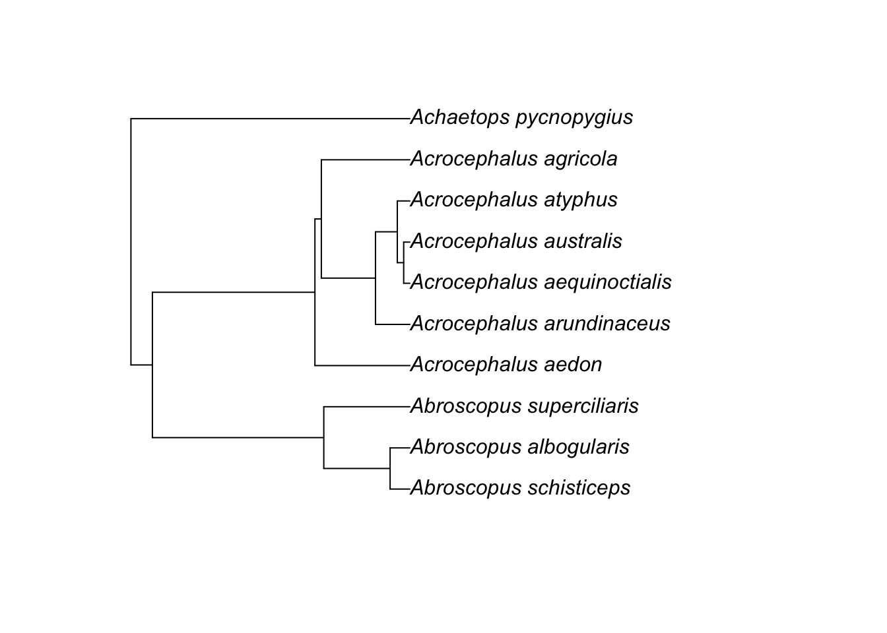
# check the binary and ultrametric status again
is.binary(tree_pruned)
# [1] TRUE
is.ultrametric(tree_pruned)
# [1] TRUEStep 5. Compute the phylogenetic correlation matrix
Once the species names have been matched, the tree has been pruned to the taxa in the dataset, and the branch lengths are appropriate for the intended covariance model, you can compute the phylogenetic correlation matrix under a Brownian motion model using the vcv() function from the ape package.
A <- vcv(tree_pruned, corr = TRUE)
# check the dimensions and preview the top-left block
dim(A) This matrix represents the pairwise correlations implied by the Brownian-motion model for the supplied tree and branch lengths and can be used directly in phylogenetic comparative or meta-analytic models.
In practice, you will not always have a phylogenetic tree readily available for the species in your dataset. In such cases, the rotl package can be used to access the Open Tree of Life and retrieve a tree based on the Latin species names in your dataset.
Note
- Make sure that the species names in your dataset are in Latin (scientific names) and are spelled correctly. The
rotlpackage relies on these names to find the corresponding species in the Open Tree of Life (https://opentreeoflife.github.io/use). - The OpenTree synthetic tree and name resolution services are actively updated. Running the same code at different times may yield slightly different trees due to updates in the database.
- For reproducible research, it is good practice to save the retrieved tree to a file (e.g., in Newick or Nexus format) after obtaining it using
rotl. This way, you can ensure that you are using the same tree in future analyses. - Automated name matching is convenient but may not always be perfect. It is advisable to manually check the matched names to ensure accuracy.
# install and load necessary packages - if not already installed
# install.packages("rotl")
# install.packages("ape")
library(rotl)
library(ape)
# record info about OpenTree version
tol_about()
# OpenTree Synthetic Tree of Life.
# Tree version: opentree16.1
# Taxonomy version: 3.7draft3
# Constructed on: 2025-12-20 00:55:58
# Number of terminal taxa: 2385875
# Number of source trees: 2064
# Number of source studies: 1931
# Source list present: false
# Root taxon: cellular organisms
# Root ott_id: 93302
# Root node_id: ott93302Step 1. Provide a species list
Here, we use 10 commonly used lab model taxa across different animal groups as an example. Use Latin names, not common names.
# make species list
myspecies <- c(
"Escherichia colli", # typo on purpose
"Chlamydomonas reinhardtii",
"Drosophila melanogaster",
"Arabidopsis thaliana",
"Rattus norvegicus",
"Mus musculus",
"Cavia porcellus",
"Xenopus laevis",
"Saccharomyces cervisae", # typo on purpose
"Danio rerio"
)Step 2. Resolve species names using OpenTree TNRS
We start with strict matching to identify exact matches and flag names that may require manual attention. We then use approximate matching only as a diagnostic step for unresolved names, because fuzzy matches can help detect likely typos or synonyms but should always be checked before being accepted.
# strict matching first:
taxa_strict <- tnrs_match_names(
names = myspecies,
do_approximate_matching = FALSE # set FALSE
)
# Warning message:
# Escherichia colli, Saccharomyces cervisae are not matched
taxa_strict
# search_string unique_name approximate_match score
# 1 escherichia colli <NA> NA NA
# 2 chlamydomonas reinhardtii Chlamydomonas reinhardtii FALSE 1
# 3 drosophila melanogaster Drosophila melanogaster FALSE 1
# 4 arabidopsis thaliana Arabidopsis thaliana FALSE 1
# 5 rattus norvegicus Rattus norvegicus FALSE 1
# 6 mus musculus Mus musculus FALSE 1
# 7 cavia porcellus Cavia porcellus FALSE 1
# 8 xenopus laevis Xenopus laevis FALSE 1
# 9 saccharomyces cervisae <NA> NA NA
# 10 danio rerio Danio rerio FALSE 1
# ott_id is_synonym flags number_matches
# 1 NA NA <NA> NA
# 2 33153 FALSE 1
# 3 505714 FALSE 1
# 4 309263 FALSE 1
# 5 271555 FALSE 1
# 6 542509 FALSE 1
# 7 744000 FALSE 1
# 8 465096 FALSE 1
# 9 NA NA <NA> NA
# 10 1005914 FALSE 1
# fuzzy matching for unresolved names:
taxa <- tnrs_match_names(
names = myspecies,
do_approximate_matching = TRUE # set TRUE
)
taxa
# search_string unique_name approximate_match
# 1 escherichia colli Escherichia coli TRUE
# 2 chlamydomonas reinhardtii Chlamydomonas reinhardtii FALSE
# 3 drosophila melanogaster Drosophila melanogaster FALSE
# 4 arabidopsis thaliana Arabidopsis thaliana FALSE
# 5 rattus norvegicus Rattus norvegicus FALSE
# 6 mus musculus Mus musculus FALSE
# 7 cavia porcellus Cavia porcellus FALSE
# 8 xenopus laevis Xenopus laevis FALSE
# 9 saccharomyces cervisae Saccharomyces cerevisiae TRUE
# 10 danio rerio Danio rerio FALSE
# score ott_id is_synonym flags number_matches
# 1 0.9375000 474506 FALSE sibling_higher 2
# 2 1.0000000 33153 FALSE 1
# 3 1.0000000 505714 FALSE 1
# 4 1.0000000 309263 FALSE 1
# 5 1.0000000 271555 FALSE 1
# 6 1.0000000 542509 FALSE 1
# 7 1.0000000 744000 FALSE 1
# 8 1.0000000 465096 FALSE 1
# 9 0.9166667 356221 FALSE 2
# 10 1.0000000 1005914 FALSE 1In this example, the strict match flags two misspelled names, and approximate matching helps identify their likely intended taxa. In practice, once these likely matches have been identified, it is better to correct the original species names and rerun strict matching than to proceed with fuzzy matches in the final workflow.
If the strict match fails or returns NAs, you can enable approximate matching. Approximate matching uses fuzzy string matching to find the closest matches in the OpenTree taxonomy, but you should always inspect the returned matches carefully.
Key columns to check include
unique_name: the matched OpenTree taxon nameott_id: the OpenTree taxonomy identifier used for tree retrievalapproximate_match:TRUEindicates a non-exact match, for example due to a typois_synonym:TRUEindicates the input name was treated as a synonym
A useful rule of thumb is as follows:
- if
approximate_match == TRUEand the reason is an obvious typo, correct the original species list and rerun the name matching. This ensures that the final dataset contains clean and unambiguous names. - If a match looks suspicious, for example because the matched taxon belongs to a different genus or the name could plausibly refer to multiple taxa, do not accept the match blindly. Instead, inspect the additional information returned by
tnrs_match_names()to confirm that the matched taxon is indeed the one you intended to include.
Step 3. Fix typos and re-run matching
myspecies_fixed <- c(
"Escherichia coli",
"Chlamydomonas reinhardtii",
"Drosophila melanogaster",
"Arabidopsis thaliana",
"Rattus norvegicus",
"Mus musculus",
"Cavia porcellus",
"Xenopus laevis",
"Saccharomyces cerevisiae",
"Danio rerio"
)
taxa_fixed <- tnrs_match_names(
names = myspecies_fixed,
do_approximate_matching = FALSE
)
# taxa_fixed
# search_string unique_name approximate_match score
# 1 escherichia coli Escherichia coli FALSE 1
# 2 chlamydomonas reinhardtii Chlamydomonas reinhardtii FALSE 1
# 3 drosophila melanogaster Drosophila melanogaster FALSE 1
# 4 arabidopsis thaliana Arabidopsis thaliana FALSE 1
# 5 rattus norvegicus Rattus norvegicus FALSE 1
# 6 mus musculus Mus musculus FALSE 1
# 7 cavia porcellus Cavia porcellus FALSE 1
# 8 xenopus laevis Xenopus laevis FALSE 1
# 9 saccharomyces cerevisiae Saccharomyces cerevisiae FALSE 1
# 10 danio rerio Danio rerio FALSE 1
# ott_id is_synonym flags number_matches
# 1 474506 FALSE sibling_higher 1
# 2 33153 FALSE 1
# 3 505714 FALSE 1
# 4 309263 FALSE 1
# 5 271555 FALSE 1
# 6 542509 FALSE 1
# 7 744000 FALSE 1
# 8 465096 FALSE 1
# 9 356221 FALSE 1
# 10 1005914 FALSE 1At this point, you should confirm that: - All species have a valid ott_id. - the returned matches correspond to the intended taxa.
Step 4. Retrieve the phylogenetic tree from OpenTree
Once you are satisfied with the matched OpenTree identifiers, you can request a trimmed subtree from the OpenTree synthetic tree using tol_induced_subtree(). At this stage, the OpenTree subtree provides a convenient phylogenetic topology for the matched taxa. However, before using it in comparative or meta-analytic models, you should still check whether the tip labels are appropriate, whether branch lengths are available and what they represent, and whether the topology and branch-length structure are appropriate for the intended covariance model and software implementation.
tree <- tol_induced_subtree(
ott_ids = taxa_fixed[["ott_id"]],
label_format = "name"
)
# returns a trimmed subtree as an ape::phylo object
# warnings about collapsing single nodes are common and usually not problematic here
Progress [---------------------------------] 0/304 ( 0%) ?s
Progress [==============================] 304/304 (100%) 0s
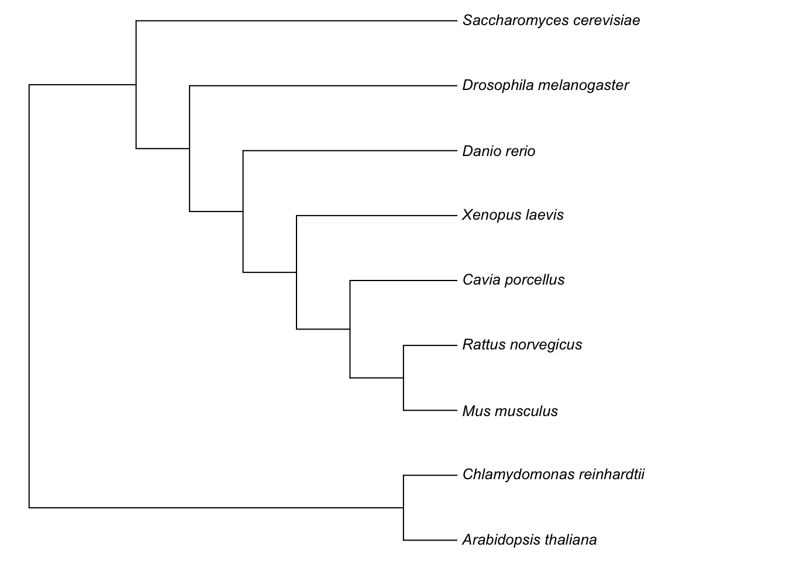
Step 5. Clean and standardise tip labels
The tip labels returned by OpenTree are not always directly ready for downstream analyses. They may contain underscores, appended identifiers, or labels corresponding to internal nodes rather than named terminal taxa. The goal of this step is therefore to standardise the labels for readability and to check that each tip can be matched unambiguously to the intended species in the dataset.
In our example, one tip is labelled "mrcaott616ott617" rather than Escherichia coli. This is a non-taxon internal node within Bacteria, which can arise when only one representative from a large clade is included. Since there are no other bacteria in the dataset and the tree position is appropriate for our purposes, we relabel this tip as Escherichia coli for didactic purposes.
tree$tip.label # see the current tree tip labels
# [1] "Arabidopsis_thaliana" "Chlamydomonas_reinhardtii"
# [3] "Mus_musculus" "Rattus_norvegicus"
# [5] "Cavia_porcellus" "Xenopus_laevis"
# [7] "Danio_rerio" "Drosophila_melanogaster"
# [9] "Saccharomyces_cerevisiae" "mrcaott616ott617"
# replace underscores with spaces for readability
tree$tip.label <- gsub("_", " ", tree$tip.label)
# inspect the lineage of the E. coli OTT identifier
ecoli <- tol_node_info(ott_id = 474506, include_lineage = TRUE)
tax_lineage(ecoli) # domain within Bacteria
# rank name unique_name ott_id
# 1 domain Bacteria Bacteria 844192
# 2 no rank cellular organisms cellular organisms 93302
# we can see what info is available for this genus - not much, looks like a messy bit of a tree flagged as "INCONSISTENT"
# tnrs_match_names(names = ("Escherichia"))
# relabel the MRCA-like tip for plotting and matching
tree$tip.label <- gsub("mrcaott616ott617", "Escherichia coli", tree$tip.label)We can now plot the cleaned tree for inspection. Note that branch lengths are not yet included, so at this stage the tree is mainly useful for checking topology and tip labels.
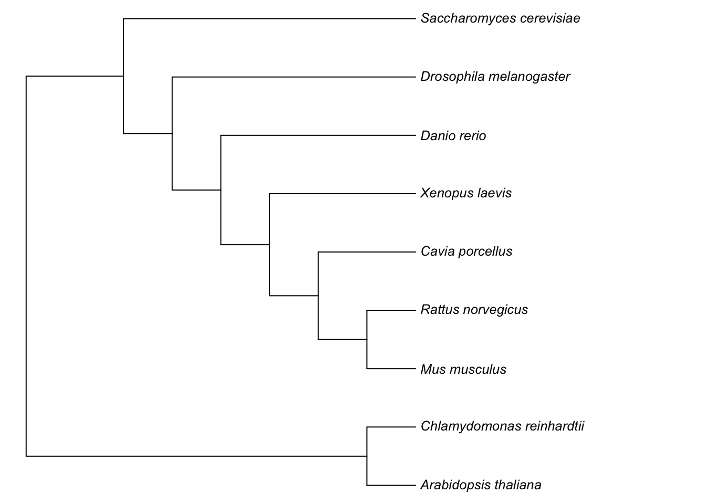
Step 6. Final checks (binary tree and matching tip labels)
Before using the tree in downstream analyses, it is good practice to confirm that:
- The tree is fully binary, if that is required for your method.
- The tip labels match exactly the species list in your dataset.
# check whether the tree is binary
is.binary(tree) # should return TRUE
# [1] TRUE
# check exact matching between the species list and tree tip labels
intersect(as.character(tree$tip.label), myspecies_fixed)
# [1] "Arabidopsis thaliana" "Chlamydomonas reinhardtii"
# [3] "Mus musculus" "Rattus norvegicus"
# [5] "Cavia porcellus" "Xenopus laevis"
# [7] "Danio rerio" "Drosophila melanogaster"
# [9] "Saccharomyces cerevisiae" "Escherichia coli"
setdiff(myspecies_fixed, as.character(tree$tip.label))
# character(0)
setdiff(as.character(tree$tip.label), myspecies_fixed)
# character(0)Step 7. Compute the phylogenetic correlation matrix (handling missing branch lengths)
At this point, the tree topology may be usable for plotting or simple inspection, but it is not yet guaranteed to be suitable for phylogenetic covariance calculations. In particular, vcv() requires branch lengths. Additional requirements depend on the covariance model and software implementation, so properties such as bifurcation and ultrametricity should be checked rather than imposed automatically. The Open Tree of Life synthetic tree often provides a well-resolved topology, but it does not always include branch lengths.
To compute a phylogenetic variance-covariance (VCV) or correlation matrix under a Brownian motion (BM) process, we use vcv() from the ape package. If the tree has no branch lengths, vcv() will fail with:
A <- vcv(tree, corr = TRUE)
# Error in vcv.phylo(tree, corr = TRUE) : the tree has no branch lengthsFor didactic purposes in this tutorial, we assign equal branch lengths to all edges (that is, all branch lengths are set to 1). This allows us to demonstrate the workflow and obtain a valid correlation matrix. In real analyses, you should consider using a tree with biologically meaningful branch lengths (for example, a time-calibrated phylogeny).
# check whether the OpenTree synthetic tree includes branch lengths
is.null(tree$edge.length)
# [1] TRUE # TRUE indicates that branch lengths are missing
# if branch lengths are missing, add equal branch lengths for didactic purposes
if (is.null(tree$edge.length)) {
tree$edge.length <- rep(1, nrow(tree$edge))
}
# compute the phylogenetic correlation matrix under Brownian motion
A <- vcv(tree, corr = TRUE)
# check the dimensions and preview the top-left block
dim(A) # should return the number of species (rows/columns)
# [1] 10 10
A[1:5, 1:5]
# Arabidopsis_thaliana Chlamydomonas_reinhardtii
# Arabidopsis_thaliana 1.0000000 0.6666667
# Chlamydomonas_reinhardtii 0.6666667 1.0000000
# Mus_musculus 0.2041241 0.2041241
# Rattus_norvegicus 0.2041241 0.2041241
# Cavia_porcellus 0.2182179 0.2182179
# Mus_musculus Rattus_norvegicus Cavia_porcellus
# Arabidopsis_thaliana 0.2041241 0.2041241 0.2182179
# Chlamydomonas_reinhardtii 0.2041241 0.2041241 0.2182179
# Mus_musculus 1.0000000 0.8750000 0.8017837
# Rattus_norvegicus 0.8750000 1.0000000 0.8017837
# Cavia_porcellus 0.8017837 0.8017837 1.0000000The suitability of a phylogenetic tree for covariance modelling depends on what its branch lengths represent, the covariance model being assumed, and any requirements of the software implementation. Two properties that are useful to inspect are polytomies and ultrametricity, but neither should be treated as a problem that always requires correction.
A polytomy occurs when an internal node has more than two descendant branches. A polytomy may represent simultaneous divergence or unresolved branching order. Importantly, a multifurcating tree is not automatically incompatible with Brownian-motion covariance: covariance can still be defined from the shared branch lengths in the supplied tree. Some methods or software may nevertheless require a bifurcating tree, in which case any resolution of a polytomy introduces an additional analytical assumption.
A tree is ultrametric when all tips are equally distant from the root. Ultrametricity does not by itself imply that branch lengths are estimated divergence times, and a non-ultrametric tree is not automatically unsuitable for phylogenetic modelling. Non-ultrametricity may arise, for example, in trees containing fossil tips or serially sampled taxa, in trees whose branch lengths represent expected sequence substitutions, or from small numerical deviations in a tree intended to be ultrametric. Whether such a tree is appropriate depends on the intended evolutionary covariance model and the interpretation of its branch lengths.
Create a toy tree with a polytomy
library(ape)
library(phytools)
# A simple tree with one polytomy (A, B, C diverge simultaneously)
tree_poly <- read.tree(text = "((A,B,C),D,E);")
plot(tree_poly)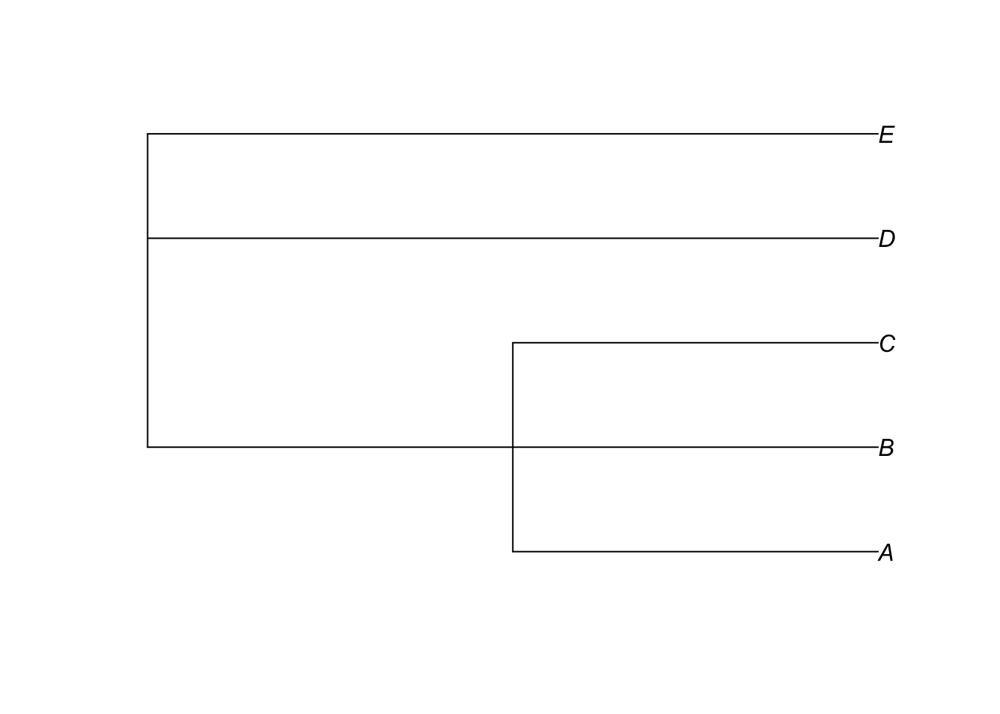
is.binary(tree_poly)
# [1] FALSEHere, species A, B, and C form a polytomy because their common ancestor has three descendants instead of two…
Resolving polytomies
If a particular analysis requires a fully bifurcating tree, a polytomy can be resolved using functions such as multi2di(). Such a resolution should not be regarded as recovering the true branching order. When the branching order is uncertain and the choice could affect the results, sensitivity analyses across plausible resolutions are preferable to relying on a single arbitrary resolution.
set.seed(1)
tree_bin <- multi2di(tree_poly, random = TRUE)is.binary(tree_bin)
# [1] TRUEtree_bin <- multi2di(tree_poly, random = TRUE)
plot(tree_bin)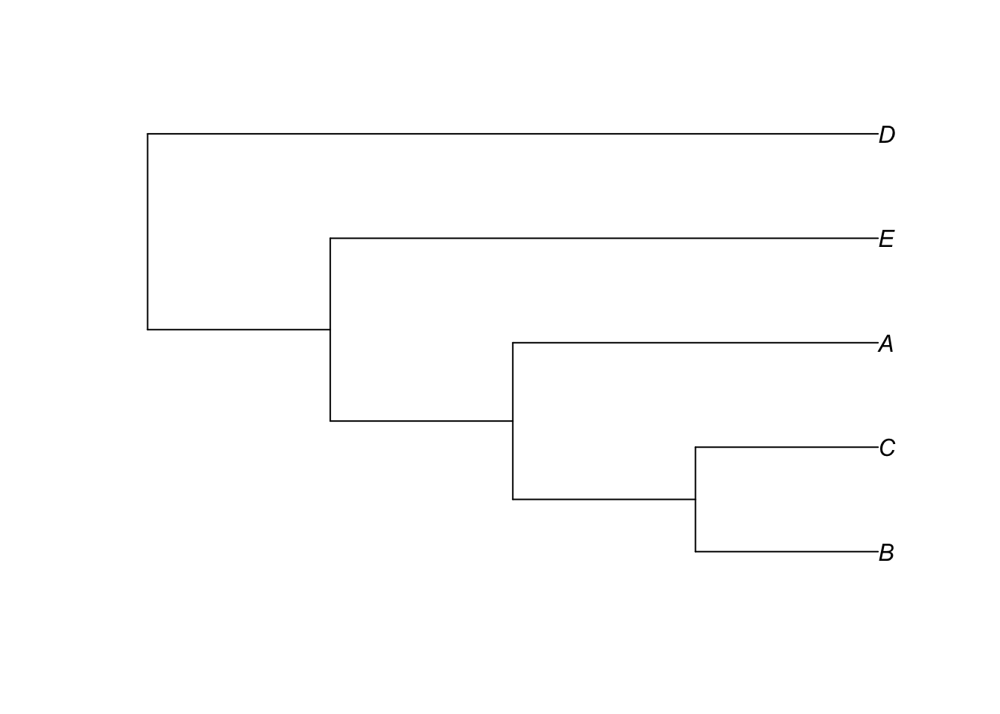
Because the resolution is random, different runs of multi2di() will yield different bifurcating trees. If you want reproducible results, set a random seed before calling multi2di().
set.seed(15)
tree_bin1 <- multi2di(tree_poly, random = TRUE)
set.seed(50)
tree_bin2 <- multi2di(tree_poly, random = TRUE)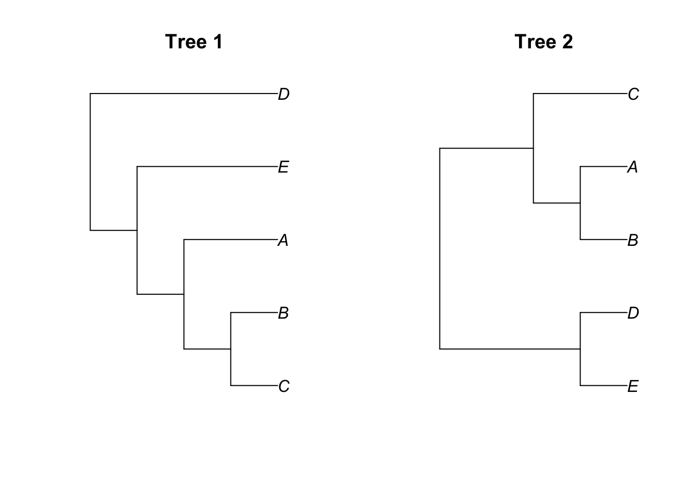
Create a non-ultrametric toy tree
tree_nonultra <- read.tree(text = "((A:2,B:2):3,(C:1,D:4):2,E:5);")
is.ultrametric(tree_nonultra)
# [1] FALSE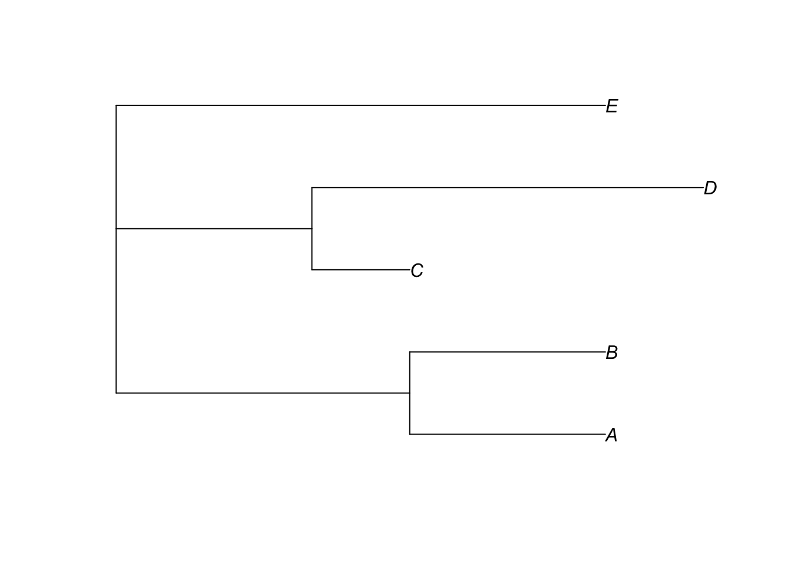
As you can see, the tips do not all end at the same distance from the root, so the tree is not ultrametric. Unequal root-to-tip distances can have several meanings, so non-ultrametricity should first be interpreted rather than automatically corrected. If the intended covariance model specifically requires branch lengths representing elapsed evolutionary time among contemporaneous tips, a suitable time-calibrated phylogeny should be used where possible.
When a time-calibrated ultrametric tree is scientifically required and appropriate calibration information is available, methods such as chronos() can be used to estimate a dated tree under explicit clock assumptions. This is a modelling step rather than a generic correction for non-ultrametricity.
tree_ultra1 <- chronos(tree_nonultra)
Setting initial dates...
Fitting in progress... get a first set of estimates
(Penalised) log-lik = -17.41843
Optimising rates... dates... -17.41843
Optimising rates... dates... -17.4165
log-Lik = -14.93714
PHIIC = 49.73 is.ultrametric(tree_ultra1)
# [1] TRUE
Setting initial dates...
Fitting in progress... get a first set of estimates
(Penalised) log-lik = -17.41843
Optimising rates... dates... -17.41843
Optimising rates... dates... -17.4165
log-Lik = -14.93714
PHIIC = 49.73 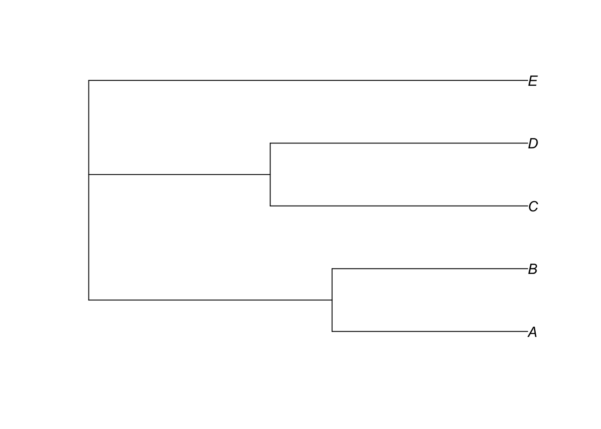
If a tree is already intended to be ultrametric and fails the check only because of small numerical or rounding differences, force.ultrametric() can be used as a numerical correction. It should not be used to convert a legitimately non-ultrametric tree, such as a tree containing fossil or serially sampled tips, into an ultrametric tree.
tree_ultra2 <- force.ultrametric(tree_nonultra, method = "extend")
is.ultrametric(tree_ultra2)***************************************************************
* Note: *
* force.ultrametric does not include a formal method to *
* ultrametricize a tree & should only be used to coerce *
* a phylogeny that fails is.ultrametric due to rounding -- *
* not as a substitute for formal rate-smoothing methods. *
***************************************************************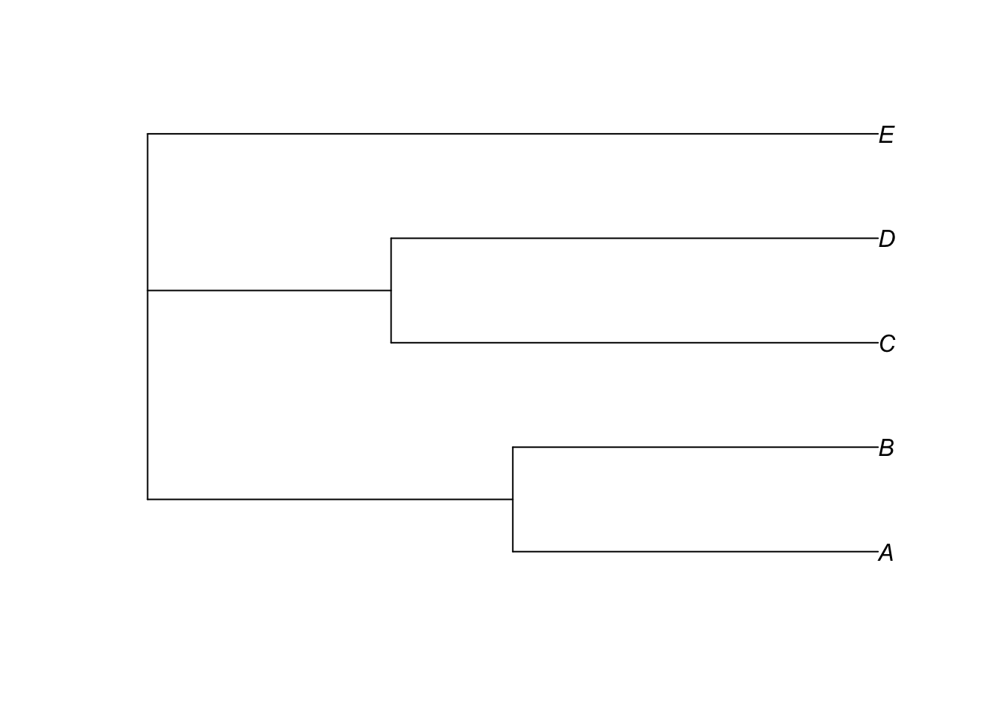
In practice, the typical workflow is:
In practice, a more general workflow is:
- Check that species names and tree tips are matched correctly.
- Inspect the topology and branch lengths, including what the branch lengths represent.
- Check whether properties such as polytomies or non-ultrametricity are compatible with the intended covariance model and software implementation.
- Resolve polytomies or modify branch lengths only when this is scientifically or computationally justified, and treat these choices as sources of analytical uncertainty.
- Where plausible alternative trees or preprocessing choices exist, assess the sensitivity of the results to those alternatives.
- Construct the phylogenetic covariance or correlation matrix from the resulting tree and verify that its row and column names match the model data.
This ensures that the phylogenetic random effect used in meta-analysis corresponds to a well-defined evolutionary model.
Examples from real meta-analyses
1. Moura et al. (2021)
Here we use the dataset from Moura et al. (2021), which collated 1,828 effect sizes from 457 studies and 341 animal species to investigate assortative mating patterns. Each effect size is a Fisher’s Z transformed correlation coefficient for body size correlations paired couples for within a single population and sampling period; each correlation is species-specific, and there are multiple correlations per species. The effect size indicates how strongly mates resemble each other in body size across a very broad taxonomic and ecological range. The dataset and phylogenetic tree are available in the metadat package as dat.moura2021.
Before fitting hierarchical meta-analytic models, it is important to assess whether key categorical predictor variables have sufficient replication to support the estimation of random effects (or fixed effects). In particular, the identifiability of variance components depends on having an adequate number of levels for each random factor, as well as repeated observations within those levels.
So, we begin by summarising the number of unique levels for all categorical variables in the dataset, with particular attention to variables commonly used as random effects in meta-analysis, such as study identity, species identity, and effect-size identity.
# read data from metadat package
dat_moura2021 <- dat.moura2021$dat
# duplicate the column with species name - additional column is needed for adding phylogenetic correlation matrix and non-phylogenetic random effect separately.
dat_moura2021$species.id.phy <- dat_moura2021$species.id
# add a column to be used as an ID of effect sizes to specify random errors in the meta-analytic model
dat_moura2021$effect.size.id <- 1:nrow(dat_moura2021)
# convert ID of effect sizes to a factor (categorical) variable
dat_moura2021$effect.size.id <- as.factor(dat_moura2021$effect.size.id)
## check data structure
cat_vars <- dat_moura2021 |>
dplyr::select(where( ~ is.factor(.x) || is.character(.x)))
n_levels <- cat_vars |>
dplyr::summarise(across(
everything(),
~ dplyr::n_distinct(.x)
)) |>
tidyr::pivot_longer(
cols = everything(),
names_to = "variable",
values_to = "n_levels"
)
n_levels # shows how many levels each categorical variable has
# # A tibble: 13 × 2
# variable n_levels
# <chr> <int>
# 1 study.id 457
# 2 effect.size.id 1828
# 3 species 345
# 4 species.id 341
# 5 subphylum 11
# 6 phylum 3
# 7 assortment.trait 233
# 8 trait.dimensions 5
# 9 field.collection 2
# 10 pooled.data 2
# 11 spatially.pooled 2
# 12 temporally.pooled 2
# 13 species.id.phy 341The dataset contains 1,828 effect sizes (effect.size.id) drawn from 457 independent studies (study.id) and 341 animal species (species.id.phy). This provides replication at both the study and species levels, which is generally important for estimating random-effects variance components. There is, however, no universal rule for what constitutes sufficient replication, because this depends on the number of levels, the distribution of observations across levels, and the magnitudes of the variance components. As a general guide, variance components are more likely to be estimable when each random effect has multiple levels and when at least some levels contribute repeated observations. In the present dataset, the relatively large number of species particularly supports the inclusion of species-level random effects, including both non-phylogenetic (species.id) and phylogenetic (species.id.phy) terms.
We next construct the phylogenetic inputs. The matching topology is supplied with the metadat data object. We assign branch lengths with ape::compute.brlen() using its default Grafen-type scaling, then check the data, tree, and matrix order explicitly. These branch lengths are constructed scaling units, not estimated divergence times.
# read tree from metadat package
tree <- dat.moura2021$tree
# calculate r-to-z transformed correlations and corresponding sampling variances
dat_moura2021 <- escalc(measure = "ZCOR", ri = ri, ni = ni, data = dat_moura2021)
# construct ultrametric Grafen-type branch lengths (not divergence times)
tree <- compute.brlen(tree)
tree_height <- max(node.depth.edgelength(tree)[seq_along(tree$tip.label)])
# BM correlation matrix and direct patristic distance matrix
A <- vcv(tree, corr = TRUE)
D_phylo <- cophenetic.phylo(tree)
tip_order <- rownames(A)
# Match taxa and order to the grouping factor used by rma.mv().
observed_taxa <- unique(as.character(dat_moura2021$species.id.phy))
stopifnot(is.ultrametric(tree),
!anyDuplicated(tip_order),
identical(tip_order, colnames(A)),
setequal(observed_taxa, tip_order))
dat_moura2021$species.id.phy <- factor(dat_moura2021$species.id.phy,
levels = tip_order)
D_phylo <- D_phylo[tip_order, tip_order]
stopifnot(identical(rownames(D_phylo), tip_order),
identical(colnames(D_phylo), tip_order),
isTRUE(all.equal(D_phylo, t(D_phylo), tolerance = 0)),
all(diag(D_phylo) == 0), !anyNA(D_phylo))Brownian motion (meta-analysis)
The Brownian Motion (BM) model assumes that traits evolve according to a random walk process along the branches of the phylogenetic tree. BM is default model for continuous trait evolution in comparative methods. In the model, the expected variance-covariance structure among species is directly proportional to their shared evolutionary history, as represented by the phylogenetic tree.
phylo_eg1_meta_ma_BM <- rma.mv(yi, vi,
random = list(
~ 1 | study.id, # among-study variation
~ 1 | effect.size.id, # additional effect-size-level variation
~ 1 | species.id, # species-specific, non-phylogenetic variation
~ 1 | species.id.phy), # species-specific, phylogenetic variation
R = list(species.id.phy = A), # Brownian motion phylogenetic correlation matrix
data = dat_moura2021,
verbose = TRUE,
sparse = TRUE,
method = "REML",
test = "t"
)
summary(phylo_eg1_meta_ma_BM)
# Multivariate Meta-Analysis Model (k = 1828; method: REML)
#
# logLik Deviance AIC BIC AICc
# -167.6726 335.3453 345.3453 372.8974 345.3782
#
# Variance Components:
#
# estim sqrt nlvls fixed factor R
# sigma^2.1 0.0192 0.1384 457 no study.id no
# sigma^2.2 0.0145 0.1202 1828 no effect.size.id no
# sigma^2.3 0.0557 0.2359 341 no species.id no
# sigma^2.4 0.0512 0.2263 341 no species.id.phy yes
#
# Test for Heterogeneity:
# Q(df = 1827) = 10743.8076, p-val < .0001
#
# Model Results:
#
# estimate se tval pval ci.lb ci.ub
# 0.3682 0.1300 2.8311 0.0046 0.1131 0.6232 **
confint(phylo_eg1_meta_ma_BM)
# estimate ci.lb ci.ub
# sigma^2.1 0.0192 0.0108 0.0325
# sigma.1 0.1384 0.1038 0.1802
# estimate ci.lb ci.ub
# sigma^2.2 0.0145 0.0121 0.0172
# sigma.2 0.1202 0.1099 0.1311
# estimate ci.lb ci.ub
# sigma^2.3 0.0557 0.0334 0.0788
# sigma.3 0.2359 0.1827 0.2807
# estimate ci.lb ci.ub
# sigma^2.4 0.0512 0.0179 0.1792
# sigma.4 0.2263 0.1336 0.4233
# Generalized I2: use the sampling V and fixed-effect X from this fit.
# This is equations 11--13, not an arithmetic mean sampling variance.
phylo_generalized_v_tilde <- function(V, X) {
W <- solve(V)
P <- W - W %*% X %*% solve(t(X) %*% W %*% X) %*% t(X) %*% W
(nrow(V) - ncol(X)) / sum(diag(P))
}
V_phylo <- diag(phylo_eg1_meta_ma_BM$vi)
X_phylo <- phylo_eg1_meta_ma_BM$X
v_tilde_phylo <- phylo_generalized_v_tilde(V_phylo, X_phylo)
stopifnot(isTRUE(all.equal(v_tilde_phylo, 0.00389078664311631,
tolerance = 1e-12)))
bm_h <- c(study = phylo_eg1_meta_ma_BM$sigma2[1],
effect_size = phylo_eg1_meta_ma_BM$sigma2[2],
species_nonphylogenetic = phylo_eg1_meta_ma_BM$sigma2[3],
species_phylogenetic = phylo_eg1_meta_ma_BM$sigma2[4])
bm_i2 <- 100 * c(bm_h, total = sum(bm_h)) / (sum(bm_h) + v_tilde_phylo)
round(bm_i2, 4)
# study effect_size species_nonphylogenetic species_phylogenetic total
# 13.2690 10.0081 38.5510 35.4772 97.3053
# BM phylogenetic heritability: allocation within fitted among-species variance.
H2_phylo_BM <- unname(bm_h["species_phylogenetic"] /
(bm_h["species_phylogenetic"] + bm_h["species_nonphylogenetic"]))
H2_phylo_BM
# 0.479239The overall estimate \(\beta_0\) is 0.368 (95% CI 0.113, 0.623) on the Fisher’s Z scale. Back transforming to the Pearson’s r, this corresponds to a correlation of roughly 0.35 - which indicates a positive correlation between mates in body size across species. On average, larger males tend to pair with larger females across species.
For this BM fit, the generalised representative sampling variance is \(\widetilde v=0.00389078664311631\). Total \(I^2=97.3053\%\) is the proportion of typical marginal variation not attributed to the assumed sampling-error variance under this fitted model. Component-specific \(I^2\) is a marginal variance allocation under the fitted model, not variance explained by phylogeny or a measure of pairwise phylogenetic correlation.
| Component | BM \(I^2\) |
|---|---|
| Study | 13.2690% |
| Effect size | 10.0081% |
| Species, non-phylogenetic | 38.5510% |
| Species, phylogenetic | 35.4772% |
| Total | 97.3053% |
The BM phylogenetic heritability is \(H^2_{\rm phylo}=0.479239\). It is the proportion of fitted among-species variance allocated to the phylogenetically structured species component under the BM model, conditional on this constructed Grafen-scaled tree and covariance specification. It is not the proportion of variance explained by phylogenetic relatedness.
The Bayesian model is the same BM meta-analytic model used above for metafor and below for glmmTMB: a common mean plus independent study-, effect-size-, and non-phylogenetic species-level random intercepts, and a phylogenetic species-level random intercept with Brownian-motion correlation matrix A. Known sampling variances enter the Gaussian likelihood directly through se(sqrt(vi), sigma = FALSE). Thus vi is not another estimated variance component, and sigma = FALSE fixes the additional residual SD at zero rather than estimating it.
The model uses explicit weakly informative priors. normal(0, 1) for the intercept is broad on the Fisher’s Z scale (where values near zero correspond to no correlation), while retaining most prior mass on values plausible for a correlation-derived outcome. Each group-level SD has exponential(1), with prior mean 1 on the Fisher’s Z scale. This is weak relative to the observed heterogeneity components while regularising the non-negative boundary; it is not selected to reproduce the frequentist estimates. There is no prior for a residual sigma, because it is not a parameter in this model.
The full MCMC fit is generated once by the version-controlled script moura_bm_brms_precompute.R, which saves the Git-ignored fitted object Rdata/tutorial_v2/moura2021_BM_brms.rds only after the diagnostic checks complete. To keep tutorial rendering reproducible and practical, this document loads that validated RDS rather than refitting MCMC on every render.
The illustrative fitting code below is intentionally not evaluated during rendering. It records the exact specification used to create the precomputed object.
moura_bm_formula <- bf(
yi | se(sqrt(vi), sigma = FALSE) ~ 1 +
(1 | study.id) +
(1 | effect.size.id) +
(1 | species.id) +
(1 | gr(species.id.phy, cov = A))
)
moura_bm_priors <- c(
set_prior("normal(0, 1)", class = "Intercept"),
set_prior("exponential(1)", class = "sd", group = "study.id"),
set_prior("exponential(1)", class = "sd", group = "effect.size.id"),
set_prior("exponential(1)", class = "sd", group = "species.id"),
set_prior("exponential(1)", class = "sd", group = "species.id.phy")
)
moura2021_BM_brms <- brm(
formula = moura_bm_formula,
family = gaussian(),
data = dat_moura2021,
data2 = list(A = A),
prior = moura_bm_priors,
backend = "cmdstanr",
chains = 4,
cores = 4,
iter = 6000,
warmup = 2000,
seed = 20260911,
control = list(adapt_delta = 0.99, max_treedepth = 15)
)
saveRDS(moura2021_BM_brms,
here("Rdata", "tutorial_v2", "moura2021_BM_brms.rds"))The final fit retained 4,000 post-warmup draws per chain (16,000 in total). The maximum rank-normalised R-hat over monitored parameters was 1.003; the minimum bulk and tail effective sample sizes were 2,060 and 3,460. The table shows mixing diagnostics for the pooled mean and each heterogeneity SD, rather than relying on a single global statement.
| Parameter | R-hat | Bulk ESS | Tail ESS |
|---|---|---|---|
| Intercept | 1.000 | 15,328 | 10,786 |
| Study SD | 1.001 | 2,060 | 3,711 |
| Effect-size SD | 1.001 | 4,994 | 8,837 |
| Non-phylogenetic species SD | 1.001 | 2,431 | 3,460 |
| Phylogenetic species SD | 1.001 | 3,669 | 4,228 |
There were no divergent transitions. The largest observed tree depth was 11 of the configured maximum 15, and the minimum energy-BFMI across chains was 0.743 (chain-specific values: 0.762, 0.743, 0.783, and 0.817). These MCMC diagnostics indicate satisfactory sampling for this fit. If R-hat is materially above 1, effective sample sizes are low, divergences occur, the maximum tree depth is reached, or BFMI is poor, posterior summaries should not be interpreted until the sampling problem has been diagnosed and the fit rechecked.
The posterior medians and 95% credible intervals are:
| Component | Posterior median | 95% credible interval |
|---|---|---|
| Pooled mean (Fisher’s Z) | 0.3608 | 0.0447, 0.6680 |
| Study variance | 0.0200 | 0.0110, 0.0338 |
| Effect-size variance | 0.0145 | 0.0121, 0.0173 |
| Species variance, non-phylogenetic | 0.0528 | 0.0297, 0.0764 |
| Species variance, phylogenetic | 0.0615 | 0.0204, 0.2206 |
These posterior estimates are close to the matched REML point estimates from metafor and glmmTMB (pooled mean 0.3682; variances 0.0192, 0.0145, 0.0557, and 0.0512). This numerical agreement is a cross-package implementation check, not an equivalence of interval interpretations: the frequentist confidence intervals and Bayesian credible intervals answer different inferential questions.
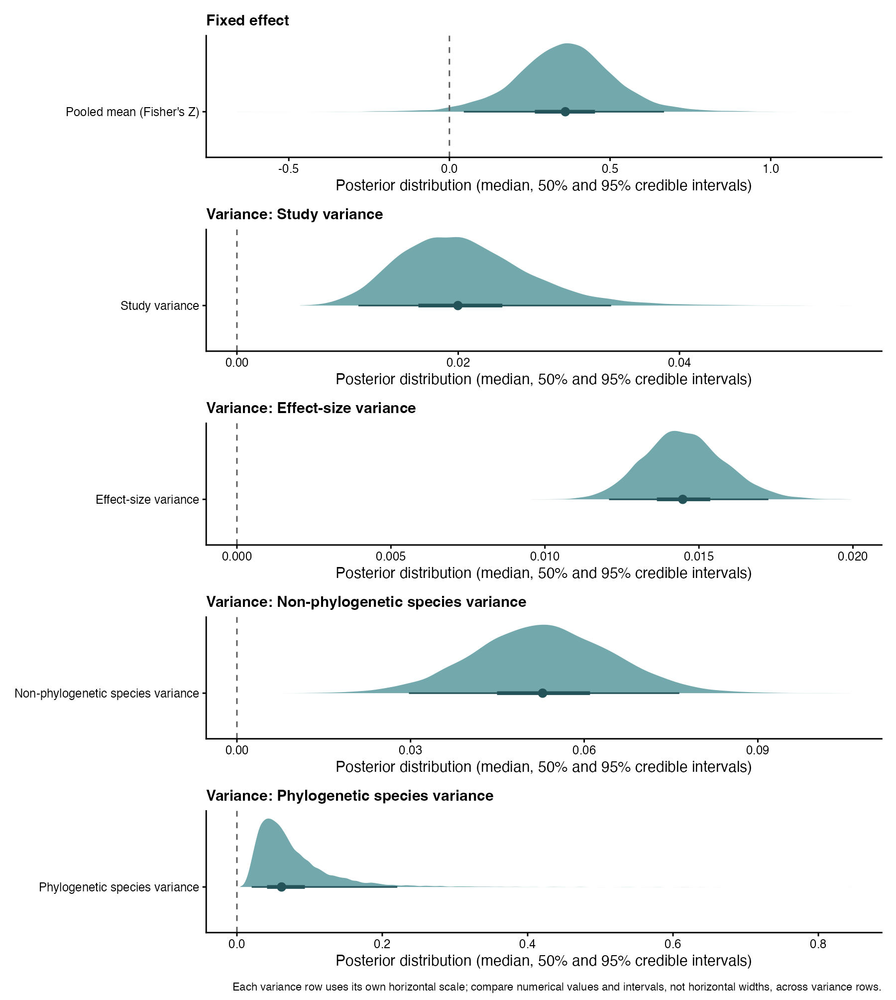
brms fit. Points are posterior medians; thick and thin intervals are central 50% and 95% credible intervals, respectively.MCMC sampling adequacy does not by itself establish posterior predictive adequacy. The density-overlay check below compares the observed Fisher’s Z distribution with replicated data from the fitted model. The observed marginal SD was 0.360; the posterior-predictive median was 0.341 (95% posterior-predictive interval 0.327–0.356), with only 0.002 of replicated SDs at least as large as observed. Thus this BM model slightly under-represents marginal outcome dispersion. We retain the matched model and report this mismatch rather than changing the model to tune the check away.
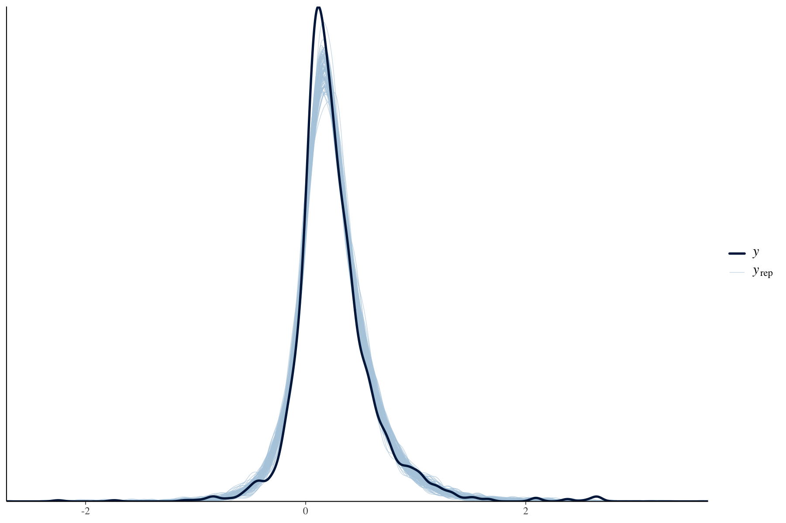
If a posterior predictive check identifies a mismatch, it should be reported and investigated as a model-adequacy issue; it is not fixed merely by obtaining more MCMC draws. The machine-readable parameter, HMC, and posterior-predictive summaries used here are saved under revision_checks/moura_bm_brms_precompute_outputs/.
For consistency across the worked examples, we use the generalised (I^2) definition introduced above. A separate posterior (I^2) summary is not calculated for this Bayesian fit here.
glmmTMB is a popular package for fitting generalised linear mixed models. glmmTMB is a general-purpose package for fitting mixed models rather than a dedicated meta-analysis package, so known sampling variances are specified differently from in metafor. Here, we supply the known sampling variance-covariance matrix through the equalto() covariance structure.
In practice, this requires three steps:
1. Treating each effect size as a unique random-effect level
# equalto() operates over factor levels. Treating the effect-size identifier
# as a factor allows the supplied sampling variance-covariance matrix to be
# aligned with the individual effect-size estimates.
dat_moura2021$effect.size.id <- as.factor(dat_moura2021$effect.size.id)In glmmTMB, the levels of the factor identify the elements of the supplied covariance matrix. Converting the effect-size identifier to a factor therefore allows each observation to be matched to its corresponding known sampling variance. This is a computational representation of the known sampling-error covariance structure, not an additional estimated heterogeneity component.
2. Specifying the random effect independent grouping structure
# the equalto() and propto() terms require a grouping variable, even when there is only one group. the dummy variable 'g' assigns all observations to single group, while the covariance structure is defined entirely by supplied matrices…
dat_moura2021$g <- 1 3. Constructing a variance-covariance matrix (VCV) that contains the known sampling variances of each effect size
# The diagonal contains the known sampling variances.
# Off-diagonal elements are zero because this worked example assumes independent sampling errors for simplicity.
VCV <- diag(dat_moura2021$vi, nrow = nrow(dat_moura2021))
rownames(VCV)<- colnames(VCV)<- dat_moura2021$effect.size.idWe create a sampling variance-covariance matrix whose diagonal elements are the known sampling variances of the effect sizes. Off-diagonal elements are zero in this worked example because we assume independent sampling errors for simplicity. If effect-size estimates have correlated sampling errors, those covariances need to be represented in the off-diagonal elements of this matrix or by another justified approximation.
The equalto() term in glmmTMB requires a grouping factor. The dummy variable g serves this purpose, which we set to a single level (one group), i.e. all observations are assigned to the same group. If the grouping factor had more than one level, each group would have a separate independent random-effect vector with the same variance-covariance parameters. In this implementation, we use a single level so that the supplied covariance matrix applies to the full vector of effect-size estimates.
For more details, you can also refer to this vignette: https://cran.r-project.org/web/packages/glmmTMB/vignettes/covstruct.html
And the following supplementary material for fitting meta-analysis with glmmTMB: https://coraliewilliams.github.io/equalto_sim_study/webpage.html.
# reorders the rows and columns of the phylogenetic covariance matrix so that species appear in a consistent alphabetical order, ensuring that the matrix aligns correctly with the species factor used in the model.
A <- A[sort(rownames(A)), sort(rownames(A))]
system.time(
phylo_eg1_tmb <- glmmTMB(yi ~ 1 +
# the term equalto(0 + effect.size.id|g, VCV) specifies that the random effect associated with each effect size has a covariance structure defined by the matrix VCV. This effectively encodes the known sampling variances into the model
equalto(0 + effect.size.id|g, VCV) +
(1|study.id) +
# the terms (1|species.id) and propto(0 + species.id.phy|g, A) model non-phylogenetic and phylogenetic species-level variation, respectively. The propto() term uses the phylogenetic covariance matrix A to capture shared evolutionary history among species
(1|species.id) +
propto(0 + species.id.phy|g, A),
data = dat_moura2021,
REML = TRUE)
)Now, we want to know the model output. Although the fitted model is statistically equivalent to the models fitted metafor and brms, glmmTMB reports variance components in a different way, which can initially confusing…
head(confint(phylo_eg1_tmb), 10)
# 2.5 % 97.5 % Estimate
# (Intercept) 0.1132610 0.6230707 0.3681658
# Std.Dev.(Intercept)|study.id 0.1056462 0.1813458 0.1384142
# Std.Dev.(Intercept)|species.id 0.1932854 0.2879763 0.2359271
# Std.Dev.species.id.phyAcanthurus_leucosternon_ott388125|g.1 0.1293612 0.3959730 0.2263262
# Std.Dev.species.id.phyAcanthurus_nigricans_ott467313|g.1 0.1293612 0.3959730 0.2263262
# Std.Dev.species.id.phyAcanthurus_nigrofuscus_ott605289|g.1 0.1293612 0.3959730 0.2263262
# Std.Dev.species.id.phyAchatina_fulica_ott997087|g.1 0.1293612 0.3959730 0.2263262
# Std.Dev.species.id.phyAegithalos_glaucogularis_vinaceus_ott5560982|g.1 0.1293612 0.3959730 0.2263262
# Std.Dev.species.id.phyAethia_pusilla_ott855484|g.1 0.1293612 0.3959730 0.2263262
# Std.Dev.species.id.phyAgalychnis_callidryas_ott9483|g.1 0.1293612 0.3959730 0.2263262
sigma(phylo_eg1_tmb)^2
# [1] 0.01445014 # residual variance
phylo_eg1_tmb_varcor <- VarCorr(phylo_eg1_tmb)$cond
exp(phylo_eg1_tmb$fit$par)
# betadisp theta theta theta
# 0.12020875 0.13841423 0.23592711 0.05122353 <- residual, study.id, species.id, species.id.phyYou can see the outputs both summary() and confint(). The confint() output reports standard deviations (SD) of random effects, not variances
For example…
(Intercept) -> overall mean
Std.Dev.(Intercept) | study.id -> correspond to the square roots of study-level variance
Std.Dev.(Intercept) | species.id -> correspond to the square roots of non-phylogenetic species-level varianceYou see the output also includes many rows such as…
Std.Dev.species.id.phyAcanthurus_leucosternon_ott388125|g.1
Std.Dev.species.id.phyAcanthurus_nigricans_ott467313|g.1
do not represent separate variance parameters for each species. They are phylogenetic random effect! They are the conditional standard deviations of individual species’ phylogenetic random effects, which are all draws from the same multivariate normal distribution defined by the phylogenetic covariance matrix and a single scaling parameter. So, we should not be interpreted as species-specific variance components.
To obtain the actual variance parameters, it is more reliable to inspect the internal parameter vector:
exp(phylo_eg1_tmb$fit$par)
# betadisp -> residual SD
# theta[1] -> SD of study-level random effects
# theta[2] -> SD of non-phylogenetic species effects
# theta[3] -> Variance of phylogenetic effectsBut be careful - the meaning of theta can be changed. It depends on what random effect you included in your model. The residual variance is reported by sigma(model)^2.
Brownian motion (meta-regression)
We next extend the meta-analysis model by including the categorical moderator as a fixed effect (predictor). We next extend the meta-analysis model by including temporally.pooled (yes/no) as a categorical moderator. This variable indicates whether effect sizes were calculated from data pooled across multiple sampling periods. The meta-regression allows us to examine whether this methodological feature is associated with variation in effect sizes after accounting for the fitted hierarchical and phylogenetic random-effects structure.
phylo_eg1.1_meta_BM <- rma.mv(
yi, vi,
mods = ~ temporally.pooled,
random = list(
~ 1 | study.id,
~ 1 | effect.size.id,
~ 1 | species.id,
~ 1 | species.id.phy
),
R = list(species.id.phy = A),
data = dat_moura2021,
verbose = TRUE,
sparse = TRUE,
method = "REML"
)
summary(phylo_eg1.1_meta_BM)
# logLik Deviance AIC BIC AICc
# -165.9738 331.9476 343.9476 377.0069 343.9938
# Variance Components:
# estim sqrt nlvls fixed factor R
# sigma^2.1 0.0194 0.1393 457 no study.id no
# sigma^2.2 0.0145 0.1204 1828 no effect.size.id no
# sigma^2.3 0.0540 0.2323 341 no species.id no
# sigma^2.4 0.0520 0.2280 341 no species.id.phy yes
# Test for Residual Heterogeneity:
# QE(df = 1826) = 10668.4998, p-val < .0001
# Test of Moderators (coefficient 2):
# QM(df = 1) = 3.1936, p-val = 0.0739
# Model Results:
# estimate se zval pval ci.lb ci.ub
# intrcpt 0.3562 0.1311 2.7163 0.0066 0.0992 0.6132 **
# temporally.pooledyes 0.0395 0.0221 1.7871 0.0739 -0.0038 0.0829 . For studies without temporal pooling, the intercept \(\beta_0\) represents the estimated mean effect size and was 0.356 (95% CI 0.099, 0.613) on the Fisher’s Z scale. Relative to this baseline, temporally pooled studies tended to show slightly larger effect sizes on average, but the uncertainty interval overlapped zero (\(\beta_{\text{temporally.pooled}_{\text{yes}}}\) = 0.040, 95% CI = [-0.004, 0.083]).
This moderator association is estimated conditional on the fitted study-, effect-size-, species-, and phylogenetic random-effects structure. As elsewhere in this worked example, sampling errors are assumed to be independent. If repeated measurements or other shared data sources induce correlated sampling errors, those covariances would need to be represented separately in the sampling variance-covariance matrix. The fitted covariance structure also does not, by itself, remove confounding by unmeasured variables associated with temporal pooling, study identity, or phylogeny.
orchaRd::r2_ml(phylo_eg1.1_meta_BM)
# R2_marginal R2_conditional
# 0.002500313 0.896644494 We further quantified the explanatory power of the model using marginal and conditional \(R^2\). The R2_marginal (0.003) represents the proportion of variance explained by the fixed effect alone, in this case the moderator temporally.pooled. In contrast, the conditional R2_conditional (0.897) reflects the variance explained by the full model, including both fixed effects and all random effects.
The very low marginal \(R^2\) indicates that temporal pooling explains only a negligible fraction of the total variability in effect sizes. By contrast, the high conditional \(R^2\) shows that most of the variation is captured by the hierarchical and phylogenetic structure of the model.
res1 <- orchaRd::mod_results(moura2021_BM_meta_reg, mod = "temporally.pooled", group = "study.id", subset = TRUE)
orchard_plot(res1,
mod = "temporally.pooled",
group = "study.id",
xlab = "Effect size (ZCOR)",
angle = 45) +
# scale_x_discrete(labels = c("Overall effect")) +
# scale_color_manual(values = "#CDBE70") +
# scale_fill_manual(values = "#EEDC82") +
# scale_y_continuous(breaks = seq(-4.0, 4.0, 1), limits = c(-4.0, 4.0)) +
theme_classic()The validated Bayesian meta-regression uses the same known sampling variances and study/species/phylogenetic structure as the matched metafor model. Here se(sqrt(vi), sigma = TRUE) supplies vi and estimates one iid effect-size SD as sigma; no separate effect-size random intercept is included.
fit_phylo_eg1_brms_mr <- bf(
yi | se(sqrt(vi), sigma = TRUE) ~ 1 + temporally.pooled +
(1 | study.id) +
(1 | species.id) +
(1 | gr(species.id.phy, cov = A))
)
prior_mr <- c(
set_prior("normal(0, 1)", class = "Intercept"),
set_prior("normal(0, 1)", class = "b"),
set_prior("exponential(1)", class = "sigma"),
set_prior("exponential(1)", class = "sd", group = "study.id"),
set_prior("exponential(1)", class = "sd", group = "species.id"),
set_prior("exponential(1)", class = "sd", group = "species.id.phy")
)
phylo_eg1_brms_mr <- brm(
formula = fit_phylo_eg1_brms_mr, family = gaussian(), data = dat_moura2021,
data2 = list(A = A), prior = prior_mr, backend = "cmdstanr",
chains = 4, cores = 4, iter = 6000, warmup = 2000, seed = 20260912,
control = list(adapt_delta = 0.95, max_treedepth = 15)
)The online tutorial loads the validated precomputed fit rather than rerunning MCMC.
The final fit had max R-hat = 1.0043, minimum bulk ESS = 1,107, minimum tail ESS = 1,614, no divergences, maximum treedepth = 9/15, and minimum BFMI = 0.714. These diagnostics indicate adequate sampling; they do not assess whether the model reproduces the outcome distribution.
| Parameter | Posterior median | 95% credible interval |
|---|---|---|
| Pooled mean (Fisher’s Z) | 0.3456 | 0.0112, 0.6649 |
| Temporally pooled contrast | 0.0391 | -0.0039, 0.0842 |
| Study variance | 0.0201 | 0.0115, 0.0351 |
| IID effect-size variance | 0.0146 | 0.0122, 0.0173 |
| Non-phylogenetic species variance | 0.0512 | 0.0267, 0.0744 |
| Phylogenetic species variance | 0.0635 | 0.0212, 0.2501 |
The posterior medians are close to the matched metafor estimates (0.3562 for the intercept, 0.0395 for the moderator, and 0.0194, 0.0145, 0.0540, and 0.0520 for the variance components). This is an implementation check only: frequentist confidence intervals and Bayesian credible intervals have different interpretations.
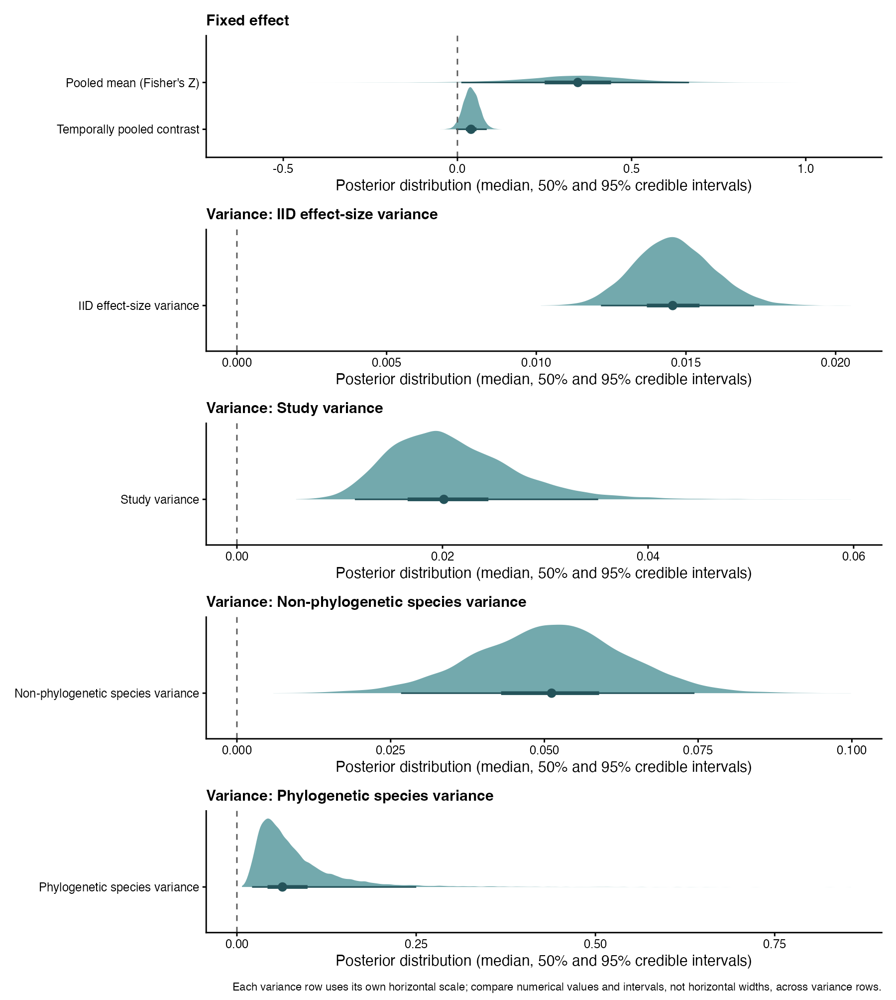
The PPC recovers the observed mean and temporal-pooling contrast, but the observed Fisher’s Z SD is 0.360 versus a replicated median of 0.341 (95% interval 0.327–0.358; posterior probability of a replicated SD at least this large = 0.010). Thus the fitted model mildly under-represents marginal dispersion. This is a posterior-predictive finding, not an MCMC convergence problem.
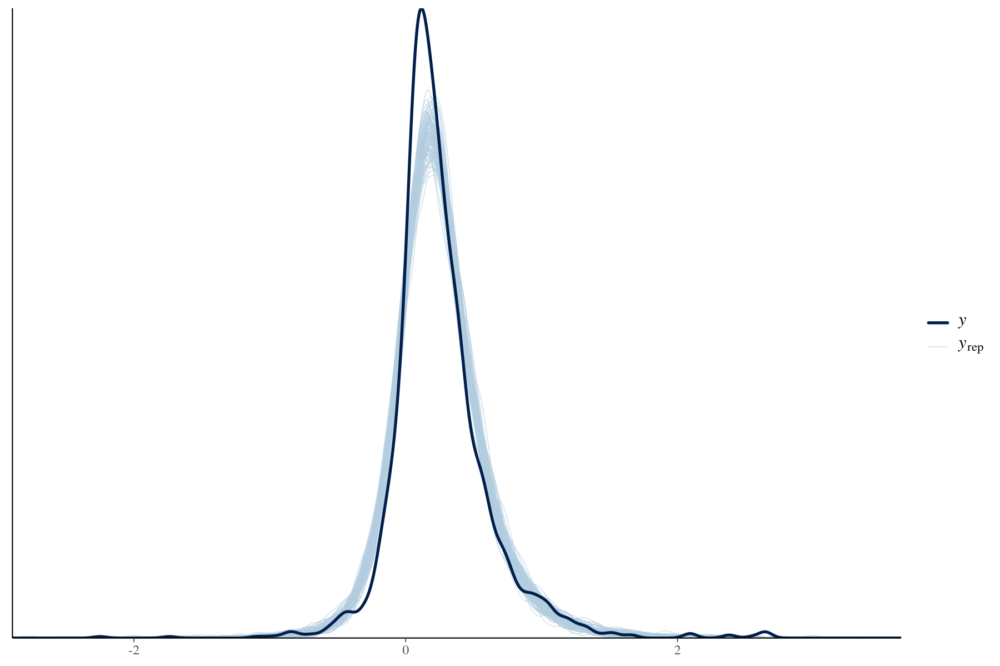
A <- A[sort(rownames(A)), sort(rownames(A))]
dat_moura2021$g <- 1
VCV <- diag(dat_moura2021$vi, nrow = nrow(dat_moura2021))
rownames(VCV)<- colnames(VCV)<- dat_moura2021$effect.size.id
dat_moura2021$effect.size.id <- as.factor(dat_moura2021$effect.size.id)
head(dat_moura2021)
system.time(
phylo_eg1.1_tmb <- glmmTMB(
yi ~ 1 + temporally.pooled +
equalto(0 + effect.size.id|g, VCV) +
(1|study.id) +
(1|species.id.phy) +
propto(0 + species.id.phy|g, A),
data = dat_moura2021,
REML = TRUE)
)
head(confint(phylo_eg1.1_tmb), 10)
# 2.5 % 97.5 % Estimate
# (Intercept) 0.099133194 0.61322985 0.35618152
# temporally.pooledyes -0.004080496 0.08314767 0.03953359
# Std.Dev.(Intercept)|study.id 0.106434012 0.18231634 0.13930061
# Std.Dev.(Intercept)|species.id.phy 0.189351801 0.28492224 0.23227256
# Std.Dev.species.id.phyAcanthurus_leucosternon_ott388125|g.1 0.130542545 0.39822099 0.22800171
# Std.Dev.species.id.phyAcanthurus_nigricans_ott467313|g.1 0.130542545 0.39822099 0.22800171
# Std.Dev.species.id.phyAcanthurus_nigrofuscus_ott605289|g.1 0.130542545 0.39822099 0.22800171
# Std.Dev.species.id.phyAchatina_fulica_ott997087|g.1 0.130542545 0.39822099 0.22800171
# Std.Dev.species.id.phyAegithalos_glaucogularis_vinaceus_ott5560982|g.1 0.130542545 0.39822099 0.22800171
# Std.Dev.species.id.phyAethia_pusilla_ott855484|g.1 0.130542545 0.39822099 0.22800171
sigma(phylo_eg1.1_tmb)^2
# [1] 0.01448824 # residual variance
phylo_eg1.1_tmb_varcor <- VarCorr(phylo_eg1.1_tmb)$cond
exp(phylo_eg1.1_tmb$fit$par)
# betadisp theta theta theta
# 0.12036710 0.13930061 0.23227256 0.05198478 <- residual variance (sd), study.id (sd), species.id (sd), species.id.phy (variance)Ornstein-Uhlenbeck
We next compare the BM covariance specification with an exponential phylogenetic covariance specification. This is a comparison of candidate statistical covariance models. It does not establish that an OU process generated the data.
For a direct patristic distance \(d_{ij}\), the exponential correlation used here is
\[ \operatorname{cor}_{ij} = \exp(-d_{ij}/\rho). \]
This is the SPEXP parameterisation in metafor. If the same distance matrix and branch-length scale are used, it can be written as \(\exp(-\alpha d_{ij})\) with \(\alpha=1/\rho\). Thus, \(\rho\) has units of the constructed Grafen branch-length units and \(\alpha\) has units per constructed Grafen branch-length unit. They are not parameters in units of estimated divergence time or direct estimates of stabilising selection.
The primary distance matrix is constructed directly from the tree:
# D_phylo was constructed above with ape::cophenetic.phylo(tree).
# It is in the same tip order as the phylogenetic grouping factor.
D_phylo[1:5, 1:5]The previous executable code formed an all-ones matrix minus the BM correlation matrix, although the accompanying prose called the first matrix an identity matrix. For this specific ultrametric, unit-height Grafen tree, the old quantity happens to satisfy \(\mathbf{1}-\mathbf{A}=\mathbf{D}_{\mathrm{phylo}}/(2h)\), where \(h=1\). The maximum numerical difference in the audit was \(6.66\times10^{-16}\). This equivalence is a property verified for this tree, not a reason to substitute \(1-\mathbf{A}\) for direct patristic distance in general.
We fit Model A, which jointly estimates \(\rho\) with the other model parameters, using the direct unscaled patristic distances:
# Model A: rho is estimated jointly with all variance components.
dat_moura2021$const <- factor(1)
phy_ou_meta <- rma.mv(yi, vi,
random = list(~ 1 | study.id,
~ 1 | effect.size.id,
~ 1 | species.id,
~ species.id.phy | const),
dist = list(species.id.phy = D_phylo),
struct = "SPEXP",
control = list(rho.init = 0.04),
data = dat_moura2021,
sparse = TRUE,
method = "REML",
test = "t")
summary(phy_ou_meta)
# Multivariate Meta-Analysis Model (k = 1828; method: REML)
# logLik Deviance AIC BIC AICc
# -160.3783 320.7567 332.7567 365.8192 332.8028
# Variance Components:
# estim sqrt nlvls fixed factor
# sigma^2.1 0.0157 0.1254 457 no study.id
# sigma^2.2 0.0144 0.1201 1828 no effect.size.id
# sigma^2.3 0.0000 0.0000 341 no species.id
# outer factor: const (nlvls = 1)
# inner term: ~species.id.phy (nlvls = 341)
# estim sqrt fixed
# tau^2 0.1029 0.3208 no
# rho 0.0364 no
# Test for Heterogeneity:
# Q(df = 1827) = 10743.8076, p-val < .0001
# Model Results:
# estimate se zval pval ci.lb ci.ub
# 0.3514 0.0355 9.9090 <.0001 0.2819 0.4210 ***
# ---
# Signif. codes: 0 ‘***’ 0.001 ‘**’ 0.01 ‘*’ 0.05 ‘.’ 0.1 ‘ ’ 1For the present data, Model A gave \(\hat\rho=0.03640768\) and \(\hat\alpha=27.46673\) per constructed Grafen branch-length unit. Its REML log-likelihood was -160.37833 and AIC was 332.75666 (six estimated parameters). The otherwise matched BM model had REML log-likelihood -167.67263 and AIC 345.34527 (five parameters), so \(\Delta\mathrm{AIC}_{\mathrm{OU-BM}}=-12.58860\). This is relative fit under these candidate covariance specifications, not evidence for a particular evolutionary process.
Using the same tree, species order, distance scale, and \(\alpha\), the direct exponential matrix agrees with ape::corMartins() to numerical precision:
rho <- phy_ou_meta$rho
alpha <- 1 / rho
A_OU <- exp(-D_phylo / rho)
martins <- corMartins(value = alpha, phy = tree, form = ~ species, fixed = TRUE)
martins <- nlme::Initialize(martins, data = data.frame(species = tip_order))
A_martins <- nlme::corMatrix(martins)[tip_order, tip_order]
stopifnot(identical(rownames(A_OU), rownames(A_martins)),
identical(colnames(A_OU), colnames(A_martins)),
max(abs(A_OU - A_martins)) < 1e-10)
# Audit result: maximum absolute difference = 5.55e-17;
# mean absolute difference = 1.77e-19.It can still be useful to form Model B, in which the matrix built with \(\hat\rho\) is treated as fixed, for example when passing the covariance structure to a subsequent meta-regression. Model B is not an independent AIC competitor of BM because its nominal AIC omits the previously estimated \(\rho\) parameter. Therefore, BM is compared with Model A, not with this fixed-matrix refit.
# Model B: useful for a downstream fixed-correlation fit, not the BM AIC comparison.
phy_ou_meta1 <- rma.mv(yi, vi,
random = list(~ 1 | study.id,
~ 1 | effect.size.id,
~ 1 | species.id,
~ 1 | species.id.phy),
R = list(species.id.phy = A_OU),
data = dat_moura2021,
sparse = TRUE,
method = "REML",
test = "t")
AIC(phylo_eg1_meta_ma_BM) # 345.34527
AIC(phy_ou_meta) # 332.75666: valid BM comparison (Model A)
AIC(phy_ou_meta1) # 330.75666: Model B; do not use for that comparisonWe can extend the same correlation structure to a meta-regression model by including moderators while retaining the OU based phylogenetic random effect:
phy_ou_meta_reg2 <- rma.mv(yi, vi,
mods = ~ temporally.pooled,
random = list(~ 1 | study.id,
~ 1 | effect.size.id,
~ 1 | species.id,
~ 1 | species.id.phy),
R = list(species.id.phy = A_OU),
data = dat_moura2021,
verbose = TRUE,
sparse = TRUE,
method = "REML",
test = "t"
)
summary(phy_ou_meta_reg2)
# Multivariate Meta-Analysis Model (k = 1828; method: REML)
#
# logLik Deviance AIC BIC AICc
# -159.3682 318.7364 330.7364 363.7957 330.7826
#
# Variance Components:
#
# estim sqrt nlvls fixed factor R
# sigma^2.1 0.0159 0.1261 457 no study.id no
# sigma^2.2 0.0144 0.1202 1828 no effect.size.id no
# sigma^2.3 0.0000 0.0001 341 no species.id no
# sigma^2.4 0.1014 0.3184 341 no species.id.phy yes
#
# Test for Residual Heterogeneity:
# QE(df = 1826) = 10668.4998, p-val < .0001
#
# Test of Moderators (coefficient 2):
# F(df1 = 1, df2 = 1826) = 1.8609, p-val = 0.1727
#
# Model Results:
#
# estimate se tval df pval ci.lb ci.ub
# intrcpt 0.3421 0.0359 9.5422 1826 <.0001 0.2718 0.4125 ***
# temporally.pooledyes 0.0293 0.0215 1.3641 1826 0.1727 -0.0128 0.0713 A fixed-\(\rho\) profile that re-estimated the remaining parameters at 101 values had an interior maximum at \(\rho=0.03640768\). The 95% likelihood-ratio support interval was approximately 0.02113–0.06783 on the constructed branch-length scale (the grid-supported values were 0.02277–0.06296). Thus, the range parameter is locally identified in this dataset, but its interpretation remains limited to covariance decay on constructed Grafen branch lengths. Across the grid-supported range, the pooled mean varied from 0.3446 to 0.3540, whereas its standard error varied from 0.0293 to 0.0461.
The pooled mean changed from 0.3682 (95% confidence interval 0.1131–0.6232) under BM to 0.3514 (0.2819–0.4210) under Model A. The much larger change in uncertainty reflects the fitted covariance structures. The mean off-diagonal species covariance was 0.0170 under BM but 0.000959 under the exponential model; their mean off-diagonal correlations were 0.332 and 0.0093, respectively. The OU/exponential fit allocated approximately 0.1029 to the phylogenetically structured species component and essentially zero to the non-phylogenetic species component, whereas the BM fit allocated 0.0512 and 0.0557, respectively. These allocations and the precision of the pooled mean are sensitive to the covariance specification. The central lesson is that a pooled mean may be relatively stable while its uncertainty and allocation of heterogeneity change substantially under different plausible phylogenetic covariance models.
The sampling-variance matrix and intercept-only fixed-effect design are unchanged between BM and Model A, so both use the same \(\widetilde v=0.00389078664311631\). Total \(I^2\) also remains almost unchanged, but its allocation among fitted components changes substantially:
| Model | Study \(I^2\) | Effect-size \(I^2\) | Non-phylogenetic species \(I^2\) | Phylogenetic species \(I^2\) | Total \(I^2\) |
|---|---|---|---|---|---|
| BM | 13.2690% | 10.0081% | 38.5510% | 35.4772% | 97.3053% |
| OU Model A | 11.4857% | 10.5264% | approximately 0% | 75.1475% | 97.1596% |
These component-specific \(I^2\) values describe marginal variance allocation under each fitted model. They do not show variance explained by phylogeny, nor do they themselves explain the different confidence intervals: the primary explanation for that difference remains the fitted correlation and covariance structure described above.
The reproducible numerical audit, including the direct-distance checks, corMartins() comparison, fitted models, and rho profile, is saved in revision_checks/OU_CORRECTNESS_AUDIT_2026-09-11.md and revision_checks/ou_correctness_outputs/.
Visualisations
Visualising results often makes them much easier to understand than presenting them only in tables or in text. We want to visualise both the overall effect size estimate and the variance components from the random effects - but how to do this nicely?
Traditionally, forest plots have been used to report pooled estimates and confidence intervals. However, forest plots do not always clearly convey the contribution of individual effect sizes to the overall estimate, such as their relative precision or inverse-variance weights. The orchaRd package provides a nice alternative, the orchard plot, which visualises the overall effect size along with the precision of each effect size estimate.
Although orchard plots provide an effective summary of model-based estimates, they are not designed to display variance-component decomposition. We therefore construct custom visualisations in ggplot2 to present the pooled effect size alongside the estimated variance components.
Here, we present how to make figures from metafor, brms, and glmmTMB using meta-analysis model outputs.
metafor_p1 <- orchaRd::orchard_plot(phylo_eg1_meta_ma_BM,
group = "study.id",
xlab = "Effect size",
angle = 45) +
scale_x_discrete(labels = c("Overall effect")) +
scale_color_manual(values = "#CDAD00") +
scale_fill_manual(values = "#FFD700") +
theme_classic()
## random effect
ci_var <- confint(phylo_eg1_meta_ma_BM, level = 0.95)
# estimate ci.lb ci.ub
# sigma^2.1 0.0192 0.0108 0.0325
# sigma.1 0.1384 0.1038 0.1802
#
# estimate ci.lb ci.ub
# sigma^2.2 0.0145 0.0121 0.0172
# sigma.2 0.1202 0.1099 0.1311
#
# estimate ci.lb ci.ub
# sigma^2.3 0.0557 0.0334 0.0788
# sigma.3 0.2359 0.1827 0.2807
#
# estimate ci.lb ci.ub
# sigma^2.4 0.0512 0.0179 0.1792
# sigma.4 0.2263 0.1336 0.4233
tbl <- tibble::as_tibble(ci_var, rownames = "term")
label_map <- c("Effect_id", "Study_id", "Species", "Phylo")
tbl_var <- tbl |>
filter(str_detect(term, "^sigma\\^2\\.")) |>
mutate(
idx = as.integer(str_match(term, "\\.(\\d+)$")[,2]),
label = case_when(
idx == 1 ~ "Study_id",
idx == 2 ~ "Effect_id",
idx == 3 ~ "Species",
idx == 4 ~ "Phylo"
),
label = factor(label, levels = label_map)
)
metafor_p2 <- ggplot(tbl_var, aes(x = label, y = estimate)) +
geom_point(size = 3.0, color = "#528B8B") +
geom_errorbar(aes(ymin = ci.lb, ymax = ci.ub), width = 0.25, color = "#528B8B") +
coord_flip() +
labs(x = NULL, y = "Variance 95% CI") +
# scale_y_continuous(breaks = seq(0, 10.0, 1), limits = c(0, 10.0)) +
theme_classic(base_size = 12)
metafor_eg1_1 <- metafor_p1 / metafor_p2
metafor_eg1_1
In brms, we can extract posterior samples for both fixed and random effects, and visualise them using ggplot2.
brms fit.Now, we can make the orchard plot using orchaRd package (more detailed information: here)
tmb_rma <- glmmTMB_to_rma(
phylo_eg1_tmb,
yi = "yi",
vi = "vi",
data = dat_moura2021,
measure = "GEN"
)
class(tmb_rma)
# [1] "rma.mv" "rma"
eg1_tmb <- orchaRd::mod_results(
tmb_rma,
mod = "1",
group = "study.id"
)
tmb_p1 <- orchaRd::orchard_plot(eg1_tmb,
xlab = "effect size (Zr)",
angle = 45,
g = FALSE
) +
scale_x_discrete(labels = c("Overall effect")) +
scale_color_manual(values = "#CDAD00") +
scale_fill_manual(values = "#FFD700") +
theme_classic()
tmb_p1
2. Lim et al. (2014)
We used the o_o_unadj dataset from dat.lim2014 in the metadat package. The dataset come from Lim et al. (2014). It includes correlation coefficients (ri) and sample sizes (ni) describing the association between offspring size and offspring number, unadjusted for maternal size, across multiple species, along with a matching phylogenetic tree. We converted ri to Fisher’s z effect sizes (yi) and derived the corresponding sampling variances (vi) prior to model fitting. The resulting example dataset contained 170 effect sizes and 120 species.
# load dataset and tree
dat_lim2014 <- dat.lim2014$o_o_unadj
tre_lim2014 <- dat.lim2014$o_o_unadj_tree
# calculate effect size and sampling variances
dat_lim2014 <- escalc(measure = "ZCOR", ri = ri, ni = ni, data = dat_lim2014)
# check the tree
is.binary(tre_lim2014) # TRUE
is.ultrametric(tre_lim2014)
# in .is.ultrametric_ape(phy, tol, option, length(phy$tip.label)) : the tree has no branch lengths
# -> so we need to get the branch length…
# compute branch length
tre_lim2014 <- compute.brlen(tre_lim2014)
# make the additional species column - we will use this to consider phylo- and non-phylo random effects
dat_lim2014$phy <- dat_lim2014$species
# make effect size id
dat_lim2014$id <- 1:nrow(dat_lim2014)
head(dat_lim2014)# check the datasetBrownian motion (meta-analysis)
# make phylogenetic correlation matrix
A <- vcv(tre_lim2014, corr = TRUE)
fit_phylo_eg2_metafor_ma <- rma.mv(yi, vi,
random = list(~ 1 | id,
~ 1 | phy,
~ 1| species),
R = list(phy = A),
data = dat_lim2014,
verbose = TRUE,
sparse = TRUE,
method = "REML"
)
summary(fit_phylo_eg2_metafor_ma)
# Multivariate Meta-Analysis Model (k = 170; method: REML)
#
# logLik Deviance AIC BIC AICc
# -93.3327 186.6653 194.6653 207.1849 194.9092
#
# Variance Components:
#
# estim sqrt nlvls fixed factor R
# sigma^2.1 0.0630 0.2510 170 no id no
# sigma^2.2 0.0534 0.2311 120 no phy yes
# sigma^2.3 0.0777 0.2788 120 no species no
#
# Test for Heterogeneity:
# Q(df = 169) = 1823.4239, p-val < .0001
#
# Model Results:
#
# estimate se zval pval ci.lb ci.ub
# -0.1308 0.1219 -1.0729 0.2833 -0.3696 0.1081 The following two brms formulations target the same Lim BM meta-analysis and use the same explicit priors. Both fits use four chains, 6,000 iterations, 2,000 warmup iterations, adapt_delta = 0.99, and max_treedepth = 15; the code is non-executing because the tutorial loads validated RDS files.
A <- vcv.phylo(tre_lim2014, corr = TRUE)
V <- diag(dat_lim2014$vi)
rownames(V) <- colnames(V) <- dat_lim2014$id
lim_vcv_formula <- bf(yi ~ 1 + (1 | species) +
(1 | gr(phy, cov = A)) + (1 | gr(id, cov = V)))
lim_vcv_priors <- c(set_prior("normal(0, 1)", class = "Intercept"),
set_prior("exponential(1)", class = "sigma"),
set_prior("exponential(1)", class = "sd", group = "species"),
set_prior("exponential(1)", class = "sd", group = "phy"),
set_prior("constant(1)", class = "sd", group = "id"))
lim_vcv_brms <- brm(lim_vcv_formula, family = gaussian(), data = dat_lim2014,
data2 = list(A = lim_vcv, V = V), prior = lim_vcv_priors, backend = "cmdstanr",
chains = 4, cores = 4, iter = 6000, warmup = 2000, seed = 20260913,
control = list(adapt_delta = 0.99, max_treedepth = 15))The final VCV fit had max R-hat = 1.0014, minimum bulk/tail ESS = 1,139/1,764, zero divergences, treedepth = 7/15, and minimum BFMI = 0.411. The checked mean and SD PPC summaries match the observed data; this check does not prove model adequacy.
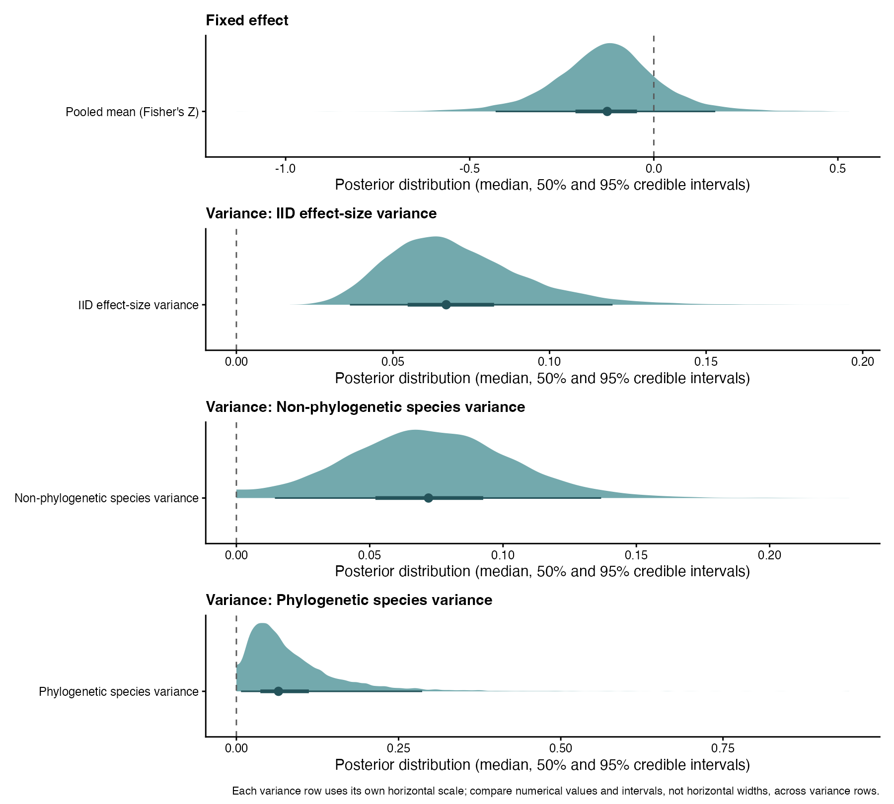
lim_se_formula <- bf(yi | se(sqrt(vi), sigma = TRUE) ~ 1 +
(1 | species) + (1 | gr(phy, cov = A)))
lim_se_priors <- c(set_prior("normal(0, 1)", class = "Intercept"),
set_prior("exponential(1)", class = "sigma"),
set_prior("exponential(1)", class = "sd", group = "species"),
set_prior("exponential(1)", class = "sd", group = "phy"))
lim_se_brms <- brm(lim_se_formula, family = gaussian(), data = dat_lim2014,
data2 = list(A = lim_vcv), prior = lim_se_priors, backend = "cmdstanr",
chains = 4, cores = 4, iter = 6000, warmup = 2000, seed = 20260914,
control = list(adapt_delta = 0.99, max_treedepth = 15))se(sqrt(vi), sigma = TRUE) supplies known sampling variance and estimates residual sigma^2 as iid effect-size heterogeneity. (1 | species) and (1 | gr(phy, cov = A)) represent non-phylogenetic and phylogenetic species heterogeneity. There is no ID-level random effect, so row-level heterogeneity is represented exactly once. This parameterisation and the VCV formulation target the same covariance model and gave compatible posterior estimates.
The corrected se() fit had max R-hat = 1.0020, minimum bulk/tail ESS = 1,374/1,933, zero divergences, treedepth = 7/15, and minimum BFMI = 0.435. Its PPC similarly reproduces the checked mean and marginal SD without establishing general adequacy.
| Formulation | Pooled mean | IID variance | Species variance | Phylogenetic variance |
|---|---|---|---|---|
| VCV | -0.1265 | 0.0670 | 0.0721 | 0.0649 |
Corrected se() |
-0.1258 | 0.0676 | 0.0720 | 0.0630 |
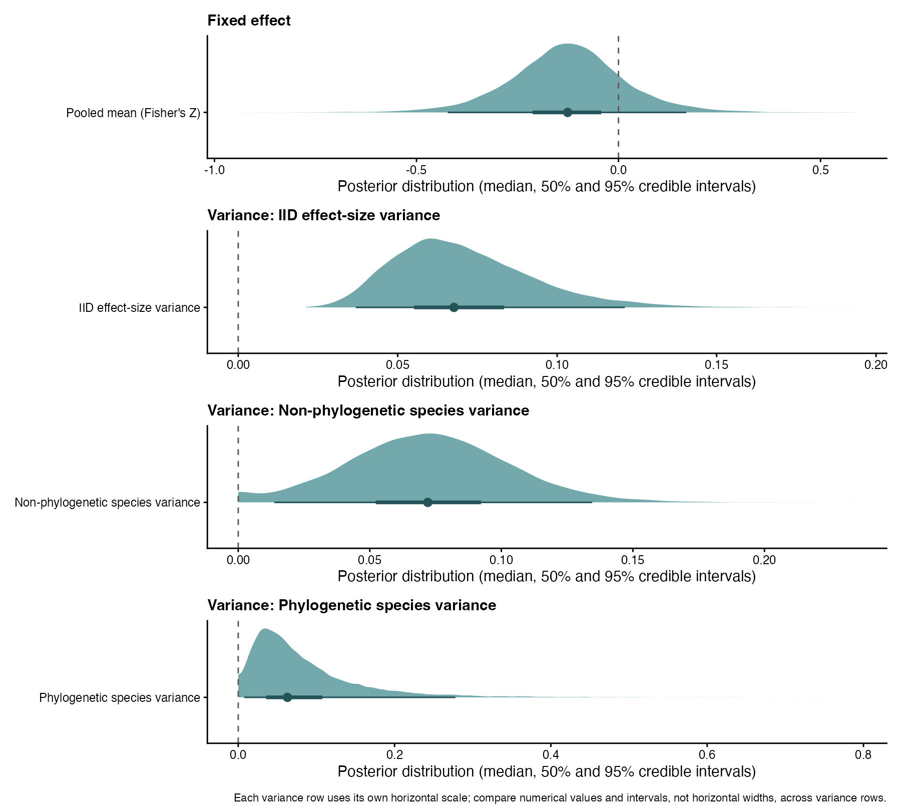
se() formulation.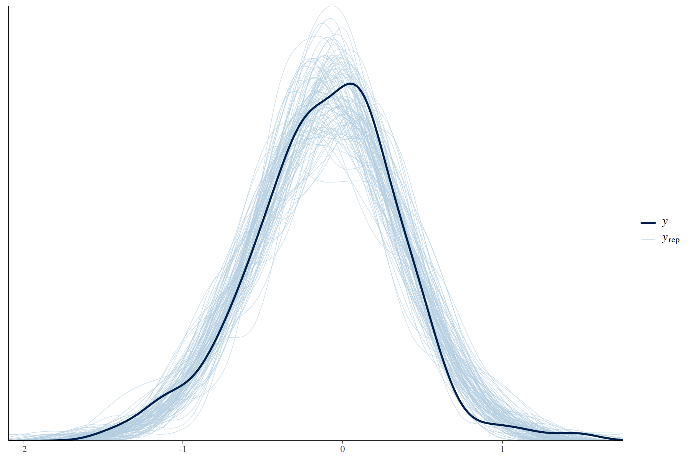
se() formulation.dat_lim2014$id <- factor(
as.character(dat_lim2014$id),
levels = mixedsort(unique(as.character(dat_lim2014$id)))
)
class(dat_lim2014$id)
A <- A[sort(rownames(A)), sort(rownames(A))]
vcv <- diag(dat_lim2014$vi, nrow = nrow(dat_lim2014))
rownames(vcv)<- colnames(vcv)<- dat_lim2014$id
dat_lim2014$g <- 1
phylo_eg2_tmb_ma <- glmmTMB(yi ~ 1 +
equalto(0 + id|g, vcv) +
(1| species) +
propto(0 + phy|g, A),
data = dat_lim2014,
REML = TRUE)
summary(phylo_eg2_tmb_ma)
# Family: gaussian ( identity )
# Formula: yi ~ 1 + equalto(0 + id | g, vcv) + (1 | species) + propto(0 + phy | g, A)
# Data: dat_lim2014
#
# AIC BIC logLik -2*log(L) df.resid
# 199.8 212.3 -95.9 191.8 166
#
# Random effects:
#
# Conditional model:
# Groups Name Variance Std.Dev. Corr
# g id1 0.0555556 0.23570
# id2 0.0909091 0.30151 0.00
# id3 0.0555556 0.23570 0.00 0.00
# id4 0.0909091 0.30151 0.00 0.00 0.00
# id5 0.0140845 0.11868 0.00 0.00 0.00 0.00
# id6 0.0098039 0.09901 0.00 0.00 0.00 0.00 0.00
# id7 0.0099010 0.09950 0.00 0.00 0.00 0.00 0.00 0.00
# id8 0.0217391 0.14744 0.00 0.00 0.00 0.00 0.00 0.00 0.00
# id9 0.0031746 0.05634 0.00 0.00 0.00 0.00 0.00 0.00 0.00 0.00
# id10 0.0208333 0.14434 0.00 0.00 0.00 0.00 0.00 0.00 0.00 0.00
# ... ... ... ... ... ... ... ... ... ... ...
# species (Intercept) 0.0777194 0.27878
# g.1 phyAlectoris_rufa 0.0533848 0.23105
# phyAlytes_obstetricans 0.0533848 0.23105 0.20
# phyAnas_platyrhynchos 0.0533848 0.23105 0.92 0.20
# phyAnguis_fragilis 0.0533848 0.23105 0.32 0.20 0.32
# phyApalone_ferox 0.0533848 0.23105 0.65 0.20 0.65 0.32
# phyApalone_mutica 0.0533848 0.23105 0.65 0.20 0.65 0.32 0.99
# phyAphrastura_spinicauda 0.0533848 0.23105 0.77 0.20 0.77 0.32 0.65 0.65
# phyAraschnia_levana 0.0533848 0.23105 0.00 0.00 0.00 0.00 0.00 0.00 0.00
# phyAustropotamobius_italicus 0.0533848 0.23105 0.00 0.00 0.00 0.00 0.00 0.00 0.00 0.93
# phyAythya_ferina 0.0533848 0.23105 0.92 0.20 0.99 0.32 0.65 0.65 0.77 0.00
# ... ... ... ... ... ... ... ... ... ... ...
# Residual 0.0629794 0.25096
#
# 0.00
# ... ...
#
# 0.00
# ... ...
#
# Number of obs: 170, groups: g, 1; species, 120
#
# Dispersion estimate for gaussian family (sigma^2): 0.063
#
# Conditional model:
# Estimate Std. Error z value Pr(>|z|)
# (Intercept) -0.1308 0.1220 -1.072 0.284
phylo_eg2_tmb$fit$par
# betadisp theta theta
# -1.382474 -1.277325 -2.930230 Across metafor, brms, and glmmTMB, this example yielded highly consistent results. The estimated overall mean effect was approximately \(\beta_0\) = -0.13 in all three packages, and heterogeneity was partitioned similarly across effect-size, phylogenetic, and species-level components. Small differences in the reported variance terms arise from package-specific parametrisations, particularly in the way sampling variance is represented.
Biologically, the negative mean effect suggests a tendency for larger offspring size to be associated with fewer offspring, consistent with the classic offspring size-number trade-off. At the same time, the non-zero phylogenetic and species-level variance components indicate that the strength of this relationship differs among taxa and is only partly explained by shared evolutionary history.
Brownian motion (meta-regression)
fit_phylo_eg2_metafor_mr <- rma.mv(yi, vi,
mods = ~ environment,
random = list(~ 1 | id,
~ 1 | phy,
~ 1 | species),
R = list(phy = A),
data = dat_lim2014,
verbose = TRUE,
sparse = TRUE,
method = "REML"
)
summary(fit_phylo_eg2_metafor_mr)
# Multivariate Meta-Analysis Model (k = 170; method: REML)
#
# logLik Deviance AIC BIC AICc
# -93.0600 186.1200 196.1200 211.7398 196.4904
#
# Variance Components:
#
# estim sqrt nlvls fixed factor R
# sigma^2.1 0.0630 0.2511 170 no id no
# sigma^2.2 0.0521 0.2283 120 no phy yes
# sigma^2.3 0.0792 0.2815 120 no species no
#
# Test for Residual Heterogeneity:
# QE(df = 168) = 1774.0613, p-val < .0001
#
# Test of Moderators (coefficient 2):
# QM(df = 1) = 0.0401, p-val = 0.8413
#
# Model Results:
#
# estimate se zval pval ci.lb ci.ub
# intrcpt -0.1395 0.1289 -1.0826 0.2790 -0.3921 0.1131
# environmentwild 0.0166 0.0829 0.2003 0.8413 -0.1460 0.1792 The validated Bayesian meta-regression uses the same known diagonal sampling covariance V as the matched frequentist model, a fixed unit-scale id term to encode that covariance, and residual sigma^2 as iid effect-size heterogeneity.
V <- diag(dat_lim2014$vi)
rownames(V) <- colnames(V) <- dat_lim2014$id
fit_phylo_eg2_brms_mr <- bf(yi ~ 1 + environment + (1 | species) +
(1 | gr(phy, cov = A)) + (1 | gr(id, cov = V)))
prior_mr <- c(set_prior("normal(0, 1)", class = "Intercept"),
set_prior("normal(0, 1)", class = "b"), set_prior("exponential(1)", class = "sigma"),
set_prior("exponential(1)", class = "sd", group = "species"),
set_prior("exponential(1)", class = "sd", group = "phy"),
set_prior("constant(1)", class = "sd", group = "id"))
phylo_eg2_brms_mr <- brm(fit_phylo_eg2_brms_mr, family = gaussian(), data = dat_lim2014,
data2 = list(A = lim_vcv, V = V), prior = prior_mr, backend = "cmdstanr",
chains = 4, cores = 4, iter = 6000, warmup = 2000, seed = 20260915,
control = list(adapt_delta = 0.99, max_treedepth = 15))The final fit had max R-hat = 1.0019, minimum bulk/tail ESS = 1,199/1,774, zero divergences, maximum treedepth = 8/15, and minimum BFMI = 0.413. These are satisfactory sampling diagnostics, separate from the PPC.
| Parameter | Posterior median | 95% credible interval |
|---|---|---|
| Intercept (Fisher’s Z) | -0.1400 | -0.4447, 0.1807 |
| Wild-environment contrast | 0.0190 | -0.1470, 0.1918 |
| IID effect-size variance | 0.0671 | 0.0367, 0.1192 |
| Non-phylogenetic species variance | 0.0752 | 0.0172, 0.1380 |
| Phylogenetic species variance | 0.0617 | 0.0038, 0.2825 |
These medians are close to the matched metafor estimates (-0.1395, 0.0166, 0.0630, 0.0792, and 0.0521). The agreement checks implementation, not the equivalence of confidence and credible intervals.
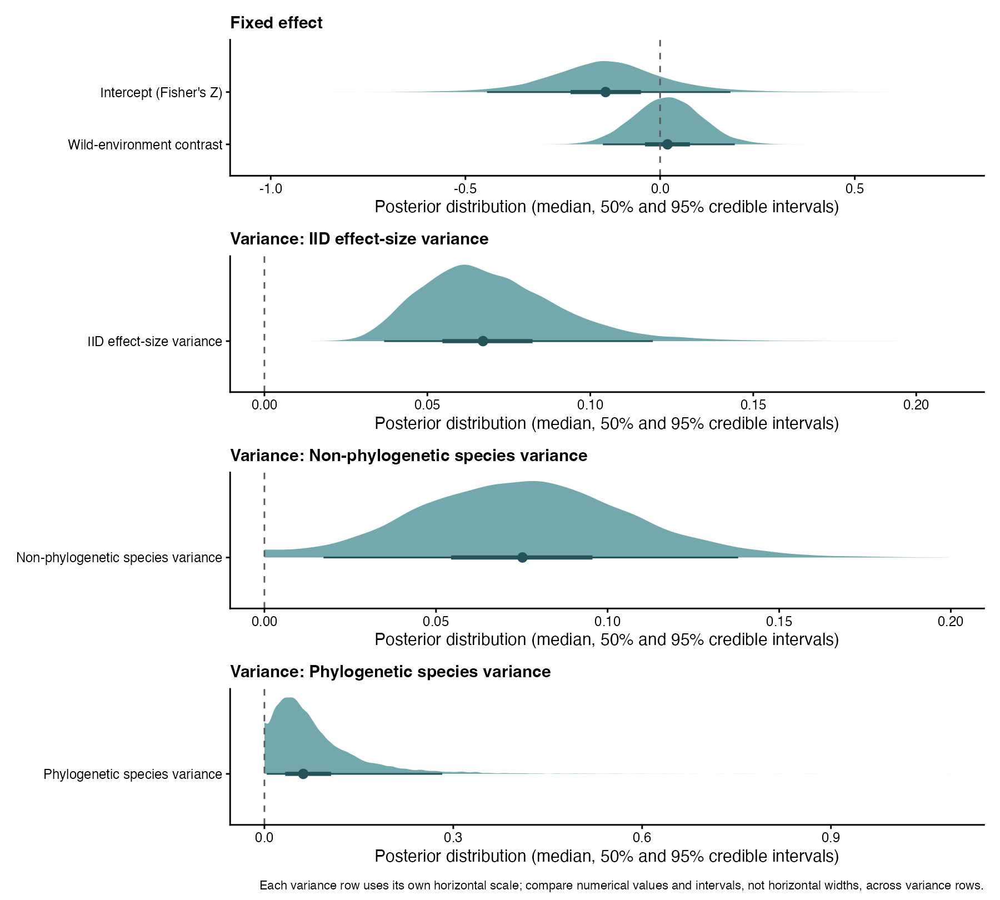
The PPC reproduces the checked mean, marginal SD, and wild-minus-captive contrast. It checks those features only and does not prove that the model is fully adequate.
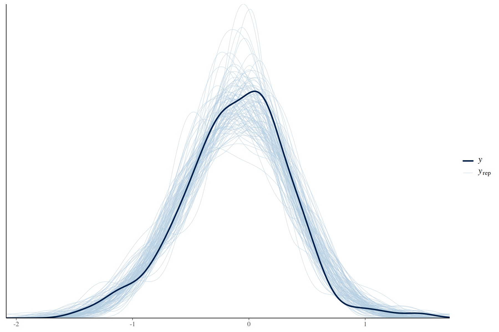
phylo_eg2_tmb_mr <- glmmTMB(yi ~ 1 + environment +
equalto(0 + id|g, vcv) +
(1| species) +
propto(0 + phy|g, A),
data = dat_lim2014,
REML = TRUE)
summary(phylo_eg2_tmb_mr)
# Family: gaussian ( identity )
# Formula: yi ~ 1 + environment + equalto(0 + id | g, vcv) + (1 | species) +
# propto(0 + phy | g, A)
# Data: dat_lim2014
#
# AIC BIC logLik -2*log(L) df.resid
# 204.9 220.6 -97.5 194.9 165
#
# Random effects:
#
# Conditional model:
# Groups Name Variance Std.Dev. Corr
# g id1 0.0555556 0.23570
# id2 0.0909091 0.30151 0.00
# id3 0.0555556 0.23570 0.00 0.00
# id4 0.0909091 0.30151 0.00 0.00 0.00
# id5 0.0140845 0.11868 0.00 0.00 0.00 0.00
# id6 0.0098039 0.09901 0.00 0.00 0.00 0.00 0.00
# id7 0.0099010 0.09950 0.00 0.00 0.00 0.00 0.00 0.00
# id8 0.0217391 0.14744 0.00 0.00 0.00 0.00 0.00 0.00 0.00
# id9 0.0031746 0.05634 0.00 0.00 0.00 0.00 0.00 0.00 0.00 0.00
# id10 0.0208333 0.14434 0.00 0.00 0.00 0.00 0.00 0.00 0.00 0.00
# ... ... ... ... ... ... ... ... ... ... ...
# species (Intercept) 0.0792370 0.28149
# g.1 phyAlectoris_rufa 0.0521124 0.22828
# phyAlytes_obstetricans 0.0521124 0.22828 0.20
# phyAnas_platyrhynchos 0.0521124 0.22828 0.92 0.20
# phyAnguis_fragilis 0.0521124 0.22828 0.32 0.20 0.32
# phyApalone_ferox 0.0521124 0.22828 0.65 0.20 0.65 0.32
# phyApalone_mutica 0.0521124 0.22828 0.65 0.20 0.65 0.32 0.99
# phyAphrastura_spinicauda 0.0521124 0.22828 0.77 0.20 0.77 0.32 0.65 0.65
# phyAraschnia_levana 0.0521124 0.22828 0.00 0.00 0.00 0.00 0.00 0.00 0.00
# phyAustropotamobius_italicus 0.0521124 0.22828 0.00 0.00 0.00 0.00 0.00 0.00 0.00 0.93
# phyAythya_ferina 0.0521124 0.22828 0.92 0.20 0.99 0.32 0.65 0.65 0.77 0.00
# ... ... ... ... ... ... ... ... ... ... ...
# Residual 0.0630428 0.25108
# 0.00
# ... ...
# 0.00
# ... ...
#
# Number of obs: 170, groups: g, 1; species, 120
#
# Dispersion estimate for gaussian family (sigma^2): 0.063
#
# Conditional model:
# Estimate Std. Error z value Pr(>|z|)
# (Intercept) -0.13951 0.12893 -1.082 0.279
# environmentwild 0.01661 0.08469 0.196 0.844Visualisations
In this dataset, we plot the meta-regression model output.
mr_res <- orchaRd::mod_results(
fit_phylo_eg2_metafor_mr,
mod = "environment",
group = "id"
)
mr_res
## 3. orchard plot
metafor_mr_p1 <- orchaRd::orchard_plot(
mr_res,
mod = "environment",
group = "id",
xlab = "Effect size",
angle = 45
) +
# scale_color_manual(values = "#CDAD00") +
# scale_fill_manual(values = "#FFD700") +
theme_classic()
metafor_mr_p1
## for random effect
ci_var_mr <- confint(fit_phylo_eg2_metafor_mr, level = 0.95)
tbl_mr <- tibble::as_tibble(ci_var_mr, rownames = "term")
label_map_mr <- c("Effect_id", "Species", "Phylo")
tbl_var_mr <- tbl_mr |>
filter(str_detect(term, "^sigma\\^2\\.")) |>
mutate(
idx = as.integer(str_match(term, "\\.(\\d+)$")[, 2]),
label = case_when(
idx == 1 ~ "Effect_id", # ~1 | id
idx == 2 ~ "Phylo", # ~1 | phy
idx == 3 ~ "Species" # ~1 | species
),
label = factor(label, levels = label_map_mr)
)
metafor_mr_p2 <- ggplot(tbl_var_mr, aes(x = label, y = estimate)) +
geom_point(size = 3.0, color = "#528B8B") +
geom_errorbar(aes(ymin = ci.lb, ymax = ci.ub), width = 0.25, color = "#528B8B") +
coord_flip() +
labs(x = NULL, y = "Variance (95% CI)") +
theme_classic(base_size = 12)
metafor_eg2_1 <- metafor_mr_p1 / metafor_mr_p2
metafor_eg2_1
tmb_mr <- glmmTMB_to_rma(
phylo_eg2_tmb_mr,
yi = "yi",
vi = "vi",
data = dat_lim2014,
measure = "GEN"
)
class(tmb_mr)
# [1] "rma.mv" "rma"
phylo_eg2_tmb_fig <- orchaRd::mod_results(
tmb_mr,
mod = "environment",
group = "id"
)
tmb_p2 <- orchaRd::orchard_plot(phylo_eg2_tmb_fig,
xlab = "effect size (Zr)",
angle = 45,
g = FALSE
) +
theme_classic()
tmb_p2
Spatial meta-analysis
From recorded coordinates to a distance matrix
Spatial meta-analysis models residual similarity as a function of separation among recorded-coordinate locations. The distance matrix must have the same row and column order as the levels of the location factor used in the model. For global data, use WGS84 ellipsoidal geodesic distances in kilometres from longitude and latitude, rather than one global planar projection.
library(geosphere)
toy_sites <- data.frame(
site_id = c("A", "B", "C"),
latitude = c(34.05, 36.16, 40.71),
longitude = c(-118.24, -115.15, -74.00)
)
coordinates_lonlat <- as.matrix(toy_sites[c("longitude", "latitude")])
D_km <- geosphere::distm(coordinates_lonlat, fun = geosphere::distGeo) / 1000
rownames(D_km) <- colnames(D_km) <- toy_sites$site_id
stopifnot(identical(rownames(D_km), toy_sites$site_id))
stopifnot(identical(colnames(D_km), toy_sites$site_id))Each element \(D_{ij}\) is the WGS84 ellipsoidal geodesic distance in kilometres between recorded-coordinate locations \(i\) and \(j\). Identical coordinates identify the same recorded-coordinate location in the dataset, but do not establish that observations came from the same exact field site.
The examples below keep three grouping structures distinct: effect_id identifies effect sizes, study_id identifies studies or references, and site_id identifies recorded-coordinate locations. In metafor, the distance matrix is supplied directly. The Spain example later shows how analogous regional spatial models can be specified in metafor, glmmTMB, and brms.
Examples from real meta-analyses
1. Grau-Andrés et al. (2024): global spatial meta-analysis
Primary and sensitivity datasets
The primary worked example uses published_cleaned, with 2,355 effect sizes of Hedges’ \(d\), 390 studies, and 380 recorded-coordinate locations. These are the spatially usable observations after excluding the recoverable influential effects removed in the published analysis. The full all_spatially_usable dataset, with 2,361 effect sizes, 393 studies, and 383 recorded-coordinate locations, is retained as a sensitivity analysis.
library(geosphere)
grau_raw <- read.csv(here("data", "Roger_etal_2024", "Roger_etal_2024.csv"))
grau_raw$effect_uid <- paste(grau_raw$study_id, grau_raw$ES_num, sep = "-")
all_spatially_usable <- grau_raw |>
filter(!is.na(latitude), !is.na(longitude))
published_exclusions <- c(
"Ngugi_2022-2", "Gagnon_2015-2", "Moris_2017-1",
"Schwilk_1997-1", "Silveira_2016-4", "Ansley_2015-1"
)
published_cleaned <- all_spatially_usable |>
filter(!effect_uid %in% published_exclusions)
stopifnot(nrow(all_spatially_usable) == 2361L,
nrow(published_cleaned) == 2355L,
all(published_cleaned$var_Hedges > 0))
prepare_spatial_data <- function(dat, n_studies, n_sites) {
dat$effect_id <- factor(seq_len(nrow(dat)))
dat$study_id <- factor(dat$study_id)
dat$site_key <- sprintf("%.8f_%.8f", dat$latitude, dat$longitude)
site_levels <- sort(unique(dat$site_key))
dat$site_id <- factor(dat$site_key, levels = site_levels)
dat$const <- factor("all_sites")
site_lookup <- unique(dat[c("site_key", "latitude", "longitude")])
site_lookup <- site_lookup[match(site_levels, site_lookup$site_key), ]
coordinates_lonlat <- as.matrix(site_lookup[c("longitude", "latitude")])
distance_km <- geosphere::distm(
coordinates_lonlat, fun = geosphere::distGeo
) / 1000
rownames(distance_km) <- colnames(distance_km) <- site_levels
stopifnot(nlevels(dat$study_id) == n_studies,
nlevels(dat$site_id) == n_sites,
identical(rownames(distance_km), levels(dat$site_id)),
identical(colnames(distance_km), levels(dat$site_id)),
isTRUE(all.equal(distance_km, t(distance_km), tolerance = 1e-10)),
all(abs(diag(distance_km)) < 1e-10))
list(data = dat, distance_km = distance_km)
}
grau_clean <- prepare_spatial_data(published_cleaned, n_studies = 390L, n_sites = 380L)
grau_full <- prepare_spatial_data(all_spatially_usable, n_studies = 393L, n_sites = 383L)Reproducibility note on influential-effect exclusions
The archived published analysis named seven influential effects. Six occur in the public data and are removed above. Launonen_1999-1 was already absent from the public CSV, so it cannot be removed again and no substitute observation was invented. The two observations without coordinates are different records from the published influential effects.
Primary exponential models
For the primary analysis, all models use the same effect sizes, diagonal sampling variances, intercept-only fixed effect, and iid effect-size heterogeneity. The one-level outer factor const allows spatial covariance across studies. The spatial term is indexed by site_id, not by effect_id.
grau_unstructured <- rma.mv(
yi = d_Hedges, V = var_Hedges,
random = list(~ 1 | effect_id, ~ 1 | study_id),
data = grau_clean$data, method = "REML", test = "t", sparse = TRUE
)
stopifnot(identical(rownames(grau_clean$distance_km), levels(grau_clean$data$site_id)),
identical(colnames(grau_clean$distance_km), levels(grau_clean$data$site_id)))
grau_spatial <- rma.mv(
yi = d_Hedges, V = var_Hedges,
random = list(~ 1 | effect_id, ~ site_id | const),
struct = "SPEXP", dist = list(site_id = grau_clean$distance_km),
data = grau_clean$data, method = "REML", test = "t", sparse = TRUE
)
stopifnot(identical(rownames(grau_clean$distance_km), levels(grau_clean$data$site_id)),
identical(colnames(grau_clean$distance_km), levels(grau_clean$data$site_id)))
grau_combined <- rma.mv(
yi = d_Hedges, V = var_Hedges,
random = list(~ 1 | effect_id, ~ 1 | study_id, ~ site_id | const),
struct = "SPEXP", dist = list(site_id = grau_clean$distance_km),
data = grau_clean$data, method = "REML", test = "t", sparse = TRUE
)The unstructured-only model represents study-level heterogeneity without a spatial component. The spatial-only model is deliberately restrictive: it omits study-level heterogeneity, so its spatial term can represent heterogeneity that is not genuinely spatial. The combined model allows both study-level heterogeneity and location-level spatial covariance.
| Model | Mean (95% CI) | Effect variance | Study variance | Spatial variance | rho (km) | REML logLik | AIC |
|---|---|---|---|---|---|---|---|
| Unstructured-only | -0.364 (-0.484, -0.243) | 0.752 | 1.138 | – | – | -3969.188 | 7944.375 |
| Spatial-only | -0.356 (-0.479, -0.233) | 0.763 | – | 1.149 | 0.137 | -3980.247 | 7968.495 |
| Combined | -0.362 (-0.545, -0.180) | 0.751 | 1.094 | 0.04785 | 2058.91 | -3968.254 | 7946.509 |
The pooled mean remains negative under all three covariance specifications. The variance allocation is more model-sensitive. In particular, the spatial-only model allocates substantial variance to an extremely short-range spatial term, but that result does not establish broad-scale spatial autocorrelation because the model omits study-level heterogeneity.
Results figures
The figures below use the tutorial’s usual two-panel result-figure layout: an orchard plot of the pooled effect and precision-weighted effect sizes above, followed by the fitted variance components below. Error bars in the variance panels are 95% profile-likelihood intervals; an arrow marks an interval whose upper endpoint exceeds the common display scale, and an absent point denotes a component that is not part of that model. The common axes make the three covariance specifications directly comparable.
Unstructured-only
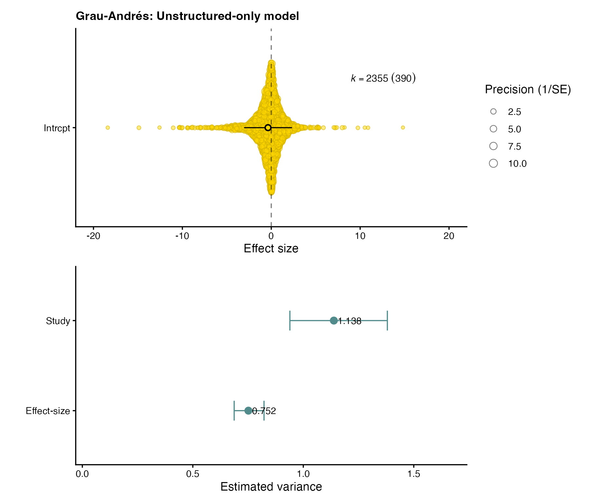
Spatial-only
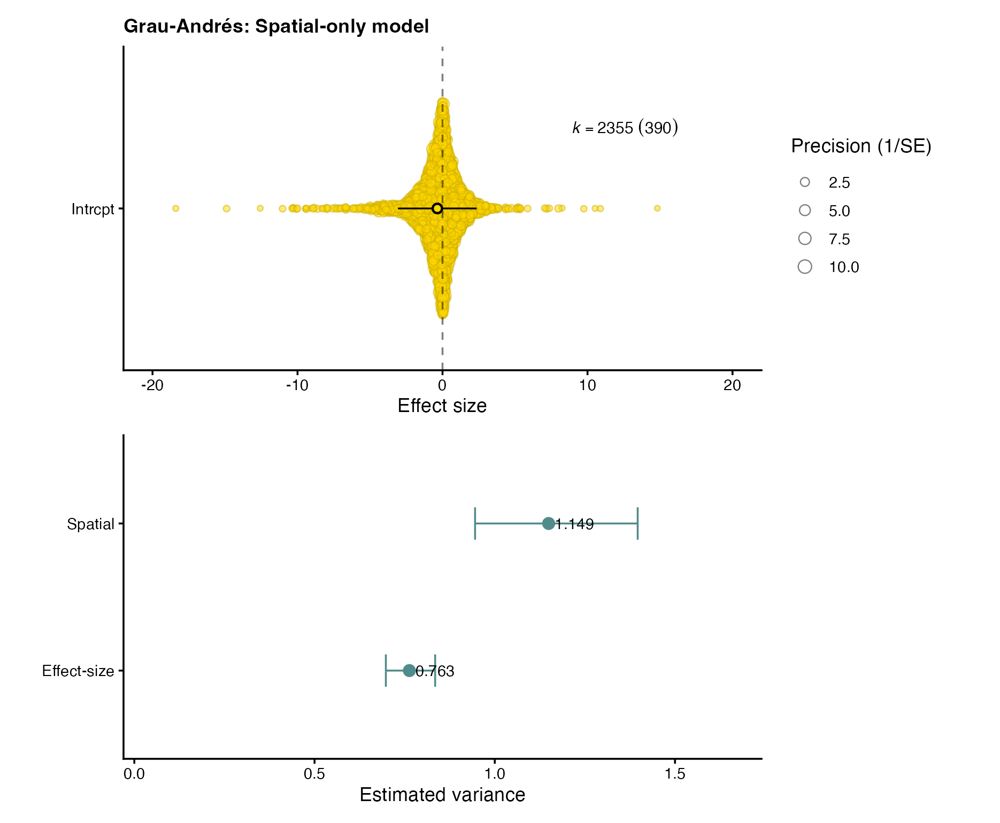
Combined
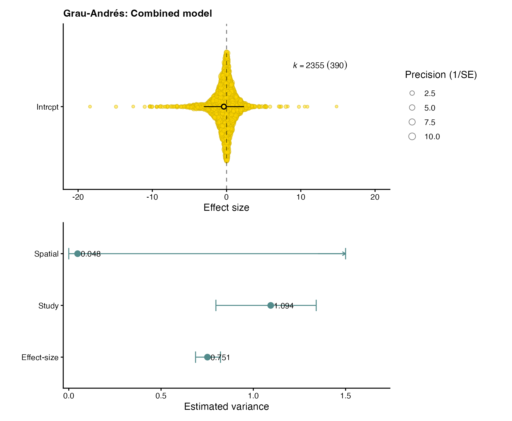
Profile diagnostics for the primary analysis
The following profile grids are identifiability diagnostics, not formal confidence intervals. The ranges below are tested values with nearly equivalent likelihoods.
| Model and component | Diagnostic result | Interpretation |
|---|---|---|
| Spatial-only spatial variance | Fixing \(\tau^2=0\) loses 381.047 log-likelihood units | The spatial variance is separated from zero under this restricted model. |
| Spatial-only rho | Tested values from about 0.005 to 0.5 km have nearly equivalent likelihoods | The very short range is poorly resolved. |
| Combined spatial variance | Fixing \(\tau^2=0\) loses only 0.933 log-likelihood units | The additional spatial variance is weakly identified. |
| Combined rho | Tested values from about 200 to 12,000 km have nearly equivalent likelihoods | The free estimate of 2058.91 km is not a well-determined correlation range. |
The combined model’s profile-grid maximum near 385 km differs from its free estimate by only 0.017 log-likelihood units. This disagreement is further evidence that the combined rho should not receive substantive biological interpretation. A small spatial-variance estimate and weak identification are different claims: here, both apply to the additional combined spatial component.
Sensitivity to influential-effect exclusions
The full all_spatially_usable dataset retains the six recoverable influential observations excluded above. Retaining them does not materially change the negative pooled conclusion, the within-dataset AIC ranking, or the qualitative identifiability interpretation. AIC values are compared only within each dataset.
| Dataset | Model | Mean (95% CI) | Spatial variance | rho (km) | Delta AIC within dataset |
|---|---|---|---|---|---|
published_cleaned |
Unstructured-only | -0.364 (-0.484, -0.243) | – | – | 0.000 |
published_cleaned |
Spatial-only | -0.356 (-0.479, -0.233) | 1.149 | 0.137 | 24.120 |
published_cleaned |
Combined | -0.362 (-0.545, -0.180) | 0.04785 | 2058.91 | 2.134 |
all_spatially_usable |
Unstructured-only | -0.345 (-0.470, -0.221) | – | – | 0.000 |
all_spatially_usable |
Spatial-only | -0.334 (-0.460, -0.208) | 1.231 | 0.050 | 33.970 |
all_spatially_usable |
Combined | -0.349 (-0.491, -0.206) | 0.06188 | 384.96 | 2.625 |
Both datasets rank the models unstructured-only, combined, then spatial-only. The combined rho changes substantially between datasets, which reinforces the profile-based conclusion that it is not a resolved spatial range.
Generalized \(I^2\)
For a multilevel meta-analysis, calculate a representative sampling variance from the actual sampling covariance matrix \(\mathbf{V}\) and fixed-effect design matrix \(\mathbf{X}\):
[ v = , =-(‘)^{-1}’, =^{-1}. ]
generalized_v_tilde <- function(V, X) {
W <- solve(V)
P <- W - W %*% X %*% solve(t(X) %*% W %*% X) %*% t(X) %*% W
(nrow(V) - ncol(X)) / sum(diag(P))
}
component_i2 <- function(variance, fitted_variances, v_tilde) {
100 * variance / (sum(fitted_variances) + v_tilde)
}
V_grau_clean <- diag(grau_clean$data$var_Hedges)
X_grau_clean <- matrix(1, nrow = nrow(grau_clean$data), ncol = 1)
v_tilde_grau_clean <- generalized_v_tilde(V_grau_clean, X_grau_clean)
stopifnot(isTRUE(all.equal(v_tilde_grau_clean, 0.110937235977794,
tolerance = 1e-12)))For published_cleaned, \(\widetilde v=0.110937236\). Component \(I^2\) is the proportion of typical marginal variance allocated to a fitted random component. It is not variance explained by geographic distance, pairwise spatial correlation, a spatial range, or evidence that the component is precisely identified.
| Model | Effect-size \(I^2\) | Study \(I^2\) | Spatial \(I^2\) | Total \(I^2\) |
|---|---|---|---|---|
| Unstructured-only | 37.563% | 56.892% | – | 94.455% |
| Spatial-only | 37.709% | – | 56.808% | 94.517% |
| Combined | 37.486% | 54.592% | 2.387% | 94.465% |
The full-data combined spatial \(I^2\) is 2.926%, compared with 2.387% for published_cleaned; total \(I^2\) remains similar. This sensitivity comparison does not convert either combined rho estimate into a spatial correlation range.
Gaussian-kernel sensitivity
The Gaussian kernel provides a sensitivity analysis on the same published_cleaned observations:
[ (d)=(-d2/2). ]
For SPGAU, rho is the e-folding distance in kilometres. The model structure, response, sampling variances, and WGS84 ellipsoidal geodesic distance matrix are otherwise unchanged.
grau_gaussian_spatial <- rma.mv(
yi = d_Hedges, V = var_Hedges,
random = list(~ 1 | effect_id, ~ site_id | const),
struct = "SPGAU", dist = list(site_id = grau_clean$distance_km),
data = grau_clean$data, method = "REML", test = "t", sparse = TRUE
)
grau_gaussian_combined <- rma.mv(
yi = d_Hedges, V = var_Hedges,
random = list(~ 1 | effect_id, ~ 1 | study_id, ~ site_id | const),
struct = "SPGAU", dist = list(site_id = grau_clean$distance_km),
data = grau_clean$data, method = "REML", test = "t", sparse = TRUE
)| Model or stationary solution | Mean (95% CI) | Effect variance | Study variance | Spatial variance | rho (km) | REML logLik | AIC |
|---|---|---|---|---|---|---|---|
| Spatial-only | -0.358 (-0.481, -0.234) | 0.763 | – | 1.153 | 0.346 | -3980.186 | 7968.373 |
| Combined, short-range solution | -0.371 (-0.506, -0.235) | 0.752 | 1.037 | 0.08403 | 306.47 | -3967.903 | 7945.806 |
| Combined, long-range solution | -0.353 (-0.559, -0.146) | 0.751 | 1.104 | 0.05016 | 3673.79 | -3968.188 | 7946.376 |
The short- and intermediate-start fits reached the approximately 306-km solution. A long-range start reached the approximately 3674-km solution, only 0.285 log-likelihood units lower. Fixing Gaussian spatial variance to zero loses only 1.285 log-likelihood units relative to the best combined solution. Thus, the pooled biological inference is robust to kernel choice, whereas the additional Gaussian spatial component is weakly identified and its rho is optimizer-dependent. Neither Gaussian rho is a biological correlation-range estimate.
2. Grau-Andrés et al. (2024): Spain cross-package implementation
The global example above requires WGS84 ellipsoidal geodesic distances because a single planar projection would distort distances across the full dataset. To demonstrate analogous model specifications in metafor, glmmTMB, and brms, we use the full Spain-labelled subset: 186 effect sizes from 30 studies at 32 recorded-coordinate locations. The geographically isolated singleton is retained. Spain was selected from objective geographic and data-structure criteria, before fitting: it is geographically coherent, retains multiple studies and locations, and can be represented with one regional projection with small distance distortion. It was not selected from model estimates or package agreement.
The subset uses a WGS84 Lambert Conformal Conic projection with projected coordinates in kilometres. Its maximum pairwise distance distortion relative to WGS84 ellipsoidal geodesic distance is 0.103%.
library(sf)
library(geosphere)
dat_spain <- read.csv(here("data", "Roger_etal_2024", "Roger_etal_2024.csv")) |>
filter(country == "Spain", !is.na(latitude), !is.na(longitude))
stopifnot(nrow(dat_spain) == 186L, all(dat_spain$var_Hedges > 0))
dat_spain$effect_id <- factor(sprintf("effect_%04d", seq_len(nrow(dat_spain))))
dat_spain$study_id <- factor(dat_spain$study_id)
dat_spain$site_key <- sprintf("%.8f_%.8f", dat_spain$latitude, dat_spain$longitude)
spain_site_levels <- sort(unique(dat_spain$site_key))
dat_spain$site_id <- factor(dat_spain$site_key, levels = spain_site_levels)
dat_spain$const <- factor("all_sites")
stopifnot(nlevels(dat_spain$study_id) == 30L, nlevels(dat_spain$site_id) == 32L)
spain_sites <- unique(dat_spain[c("site_key", "latitude", "longitude")])
spain_sites <- spain_sites[match(spain_site_levels, spain_sites$site_key), ]
spain_sites$site_id <- spain_site_levels
spain_lcc <- "+proj=lcc +lat_1=38 +lat_2=43 +lat_0=40.5 +lon_0=-3.5 +datum=WGS84 +units=m +no_defs"
spain_sf <- st_as_sf(spain_sites, coords = c("longitude", "latitude"), crs = 4326)
spain_xy_m <- st_coordinates(st_transform(spain_sf, spain_lcc))
spain_sites$x_km <- spain_xy_m[, 1] / 1000
spain_sites$y_km <- spain_xy_m[, 2] / 1000
dat_spain$x_km <- spain_sites$x_km[match(dat_spain$site_key, spain_sites$site_key)]
dat_spain$y_km <- spain_sites$y_km[match(dat_spain$site_key, spain_sites$site_key)]
D_spain_km <- as.matrix(dist(spain_sites[c("x_km", "y_km")]))
rownames(D_spain_km) <- colnames(D_spain_km) <- spain_site_levels
stopifnot(identical(rownames(D_spain_km), levels(dat_spain$site_id)))
stopifnot(identical(colnames(D_spain_km), levels(dat_spain$site_id)))
D_spain_geodesic_km <- geosphere::distm(
as.matrix(spain_sites[c("longitude", "latitude")]), fun = geosphere::distGeo
) / 1000
distortion <- abs(D_spain_km[upper.tri(D_spain_km)] /
D_spain_geodesic_km[upper.tri(D_spain_geodesic_km)] - 1)
stopifnot(max(distortion) * 100 < 0.11)All three implementations target the same spatial-only covariance decomposition:
\[\mathbf{V} + \sigma^2_{\mathrm{effect}}\mathbf{I} + \tau^2_{\mathrm{spatial}}\mathbf{R}(\rho),\]
where \(\mathbf{V}\) is the known diagonal sampling-variance matrix and, for the exponential kernel,
\[\operatorname{Cor}(d) = \exp(-d / \rho).\]
No study-level random intercept is included in this regional comparison. This spatial-only specification is a deliberately restricted common target for matching implementations across metafor, glmmTMB, and brms; it is not the preferred biological model. The preceding global example shows why omitting study-level heterogeneity can be restrictive.
metafor
spain_metafor <- rma.mv(
yi = d_Hedges, V = var_Hedges,
random = list(~ 1 | effect_id, ~ site_id | const),
struct = "SPEXP", dist = list(site_id = D_spain_km),
data = dat_spain, method = "REML", test = "t", sparse = TRUE,
control = list(REMLf = FALSE)
)REMLf = FALSE retains REML estimation and uses the likelihood convention matched by the glmmTMB equalto() implementation; it does not change the fitted variance or range estimates.
glmmTMB
VCV_spain <- diag(dat_spain$var_Hedges)
rownames(VCV_spain) <- colnames(VCV_spain) <- levels(dat_spain$effect_id)
stopifnot(identical(rownames(VCV_spain), levels(dat_spain$effect_id)))
stopifnot(identical(colnames(VCV_spain), levels(dat_spain$effect_id)))
dat_spain$pos <- glmmTMB::numFactor(dat_spain$x_km, dat_spain$y_km)
spain_glmmTMB <- glmmTMB::glmmTMB(
d_Hedges ~ 1 +
equalto(0 + effect_id | const, VCV_spain) +
exp(pos + 0 | const),
data = dat_spain, REML = TRUE
)
theta_spain <- spain_glmmTMB$fit$par[names(spain_glmmTMB$fit$par) == "theta"]
rho_spain_km <- exp(theta_spain[2])Here equalto() supplies the known sampling-variance matrix. The Gaussian observation model’s residual variance estimates iid effect-size heterogeneity after that known sampling variance has been supplied. For exp, glmmTMB parameterises correlation as \(\exp\{-\exp(-\theta_2)d\}\), so the common e-folding range is rho_spain_km = exp(theta_spain[2]) km.
brms
spain_formula_brms <- bf(
d_Hedges | se(sqrt(var_Hedges), sigma = TRUE) ~
1 + gp(x_km, y_km, cov = "exponential", scale = FALSE)
)
spain_priors_brms <- c(
prior(normal(0, 1), class = "Intercept"),
prior(student_t(3, 0, 1), class = "sigma"),
prior(student_t(3, 0, 1), class = "sdgp", coef = "gpx_kmy_km"),
prior(lognormal(log(50), 1), class = "lscale", coef = "gpx_kmy_km")
)
spain_brms <- brm(
formula = spain_formula_brms, data = dat_spain, family = gaussian(),
prior = spain_priors_brms, backend = "cmdstanr",
chains = 4, cores = 4,
threads = threading(threads = 10, static = TRUE),
iter = 3000, warmup = 1500, seed = 20260908,
control = list(adapt_delta = 0.95, max_treedepth = 12)
)With sigma = TRUE, brms models each observation with standard deviation \(\sqrt{se_i^2 + \sigma^2}\): sigma is therefore the iid effect-size heterogeneity in addition to the known sampling SE. No separate effect-ID random effect is added. With scale = FALSE, the exponential GP length scale is in kilometres.
The audited run used four chains and ten Stan threads per chain on Totoro, with 3,000 iterations, 1,500 warmup iterations, seed 20260908, adapt_delta = 0.95, and max_treedepth = 12. The validated RDS is loaded during ordinary rendering rather than refitted. Its diagnostics were max R-hat = 1.0023, minimum bulk ESS = 1,121, minimum tail ESS = 1,708, zero divergences, maximum observed treedepth = 7/12, and minimum BFMI = 0.519. These support MCMC sampling adequacy, not posterior-predictive adequacy.
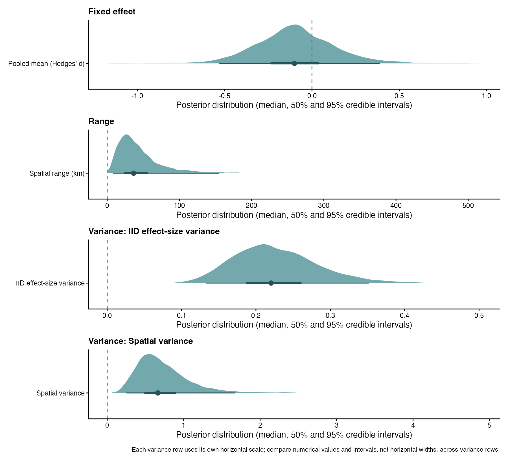
brms fit.
brms modelThe density overlay checks whether replicated effects reproduce the observed marginal distribution. The checked mean and SD are represented by these replications; this does not establish that all aspects of spatial dependence are adequate.
| Package | Pooled mean (95% CI or CrI) | iid effect variance | Spatial variance | rho (km) | Diagnostic note |
|---|---|---|---|---|---|
metafor |
-0.097 (95% CI -0.489, 0.295) | 0.214 | 0.626 | 29.0 | REML logLik = -241.321; AIC = 490.641 |
glmmTMB |
-0.097 (95% CI -0.491, 0.296) | 0.214 | 0.626 | 29.0 | convergence code 0; positive-definite Hessian; AIC = 490.641 |
brms |
-0.100 (95% CrI -0.533, 0.388) | 0.220 (95% CrI 0.132–0.352) | 0.661 (95% CrI 0.251–1.671) | 36.6 (95% CrI 8.1–155.3) | HMC diagnostics above |
Under this matched implementation, the metafor and glmmTMB parameter estimates and REML likelihood quantities agree to numerical precision. Their displayed intervals differ slightly because metafor uses a t-based interval here and glmmTMB uses a Wald z interval. The brms posterior estimates are broadly consistent with the frequentist estimates, but a credible interval and a confidence interval do not have the same inferential interpretation. Numerical similarity is a cross-package consistency check, not an equivalence of CI and CrI interpretations.
Cross-package result figure
This figure retains the same pooled-effect/variance-component layout while directly comparing the three packages. The upper panel labels frequentist 95% confidence intervals separately from the brms 95% credible interval. In the lower panel, the brms error bars are posterior 95% credible intervals; frequentist points are the audited point estimates. This is a deliberately restricted spatial-only common target for implementation comparison, not the preferred biological model for the full dataset.
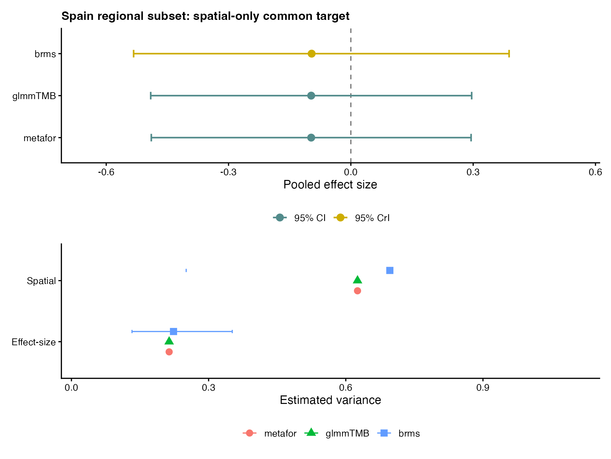
The generalized \(I^2\) results also agree closely for the frequentist implementations: total = 86.364%, iid effect-size = 21.988%, and spatial = 64.375%. For brms, the posterior median total, iid effect-size, and spatial \(I^2\) are 86.999%, 21.533%, and 65.218%, respectively. These values describe marginal variance allocation in this deliberately restricted model; they do not show that spatial distance explains that proportion of heterogeneity.
3. Scholer et al. (2020): advanced hierarchical spatial meta-analysis
The dataset accompanying Scholer et al. (2020) contains 949 effect sizes from 205 references at 454 recorded-coordinate locations. Twenty-four references occur at multiple recorded-coordinate locations, and 30 recorded-coordinate locations occur in more than one reference. This example therefore illustrates a more complex setting in which effect-size heterogeneity, study-level heterogeneity, and location-level spatial covariance can all be considered. The three identifiers below remain distinct: effect_id identifies rows, study_id identifies references, and site_id identifies sorted recorded-coordinate pairs.
dat_scholer <- read.csv(here("data", "Scholer_2020", "Scholer_2020.csv")) |>
mutate(
vi = se^2,
effect_id = factor(sprintf("effect_%04d", row_number())),
study_id = factor(ref),
site_key = sprintf("%.8f_%.8f", lat, long)
)
scholer_site_levels <- sort(unique(dat_scholer$site_key))
dat_scholer$site_id <- factor(dat_scholer$site_key, levels = scholer_site_levels)
dat_scholer$const <- factor("all_sites")
stopifnot(nrow(dat_scholer) == 949L, nlevels(dat_scholer$study_id) == 205L)
stopifnot(nlevels(dat_scholer$site_id) == 454L, all(dat_scholer$vi > 0))
scholer_sites <- unique(dat_scholer[c("site_key", "lat", "long")])
scholer_sites <- scholer_sites[match(scholer_site_levels, scholer_sites$site_key), ]
scholer_lonlat <- as.matrix(scholer_sites[c("long", "lat")])
scholer_distance_km <- geosphere::distm(scholer_lonlat, fun = geosphere::distGeo) / 1000
rownames(scholer_distance_km) <- colnames(scholer_distance_km) <- scholer_site_levels
stopifnot(identical(rownames(scholer_distance_km), levels(dat_scholer$site_id)))
stopifnot(identical(colnames(scholer_distance_km), levels(dat_scholer$site_id)))
stopifnot(isTRUE(all.equal(scholer_distance_km, t(scholer_distance_km), tolerance = 1e-10)))scholer_distance_km contains WGS84 ellipsoidal geodesic distances in kilometres. As in the primary Grau-Andrés analysis, the distance-matrix names are explicitly aligned to the sorted site_id levels before every spatial fit.
scholer_unstructured <- rma.mv(
yi = logit_survival, V = vi,
random = list(~ 1 | effect_id, ~ 1 | study_id),
data = dat_scholer, method = "REML", test = "t", sparse = TRUE
)
stopifnot(identical(rownames(scholer_distance_km), levels(dat_scholer$site_id)),
identical(colnames(scholer_distance_km), levels(dat_scholer$site_id)))
scholer_spatial_only <- rma.mv(
yi = logit_survival, V = vi,
random = list(~ 1 | effect_id, ~ site_id | const),
struct = "SPEXP", dist = list(site_id = scholer_distance_km),
data = dat_scholer, method = "REML", test = "t", sparse = TRUE
)
stopifnot(identical(rownames(scholer_distance_km), levels(dat_scholer$site_id)),
identical(colnames(scholer_distance_km), levels(dat_scholer$site_id)))
scholer_combined <- rma.mv(
yi = logit_survival, V = vi,
random = list(~ 1 | effect_id, ~ 1 | study_id, ~ site_id | const),
struct = "SPEXP", dist = list(site_id = scholer_distance_km),
data = dat_scholer, method = "REML", test = "t", sparse = TRUE
)| Model | Mean (95% CI) | Effect-size variance | Study variance | Spatial variance | rho (km) | REML logLik | AIC |
|---|---|---|---|---|---|---|---|
| Unstructured-only | 0.669 (0.558, 0.779) | 0.231 | 0.476 | – | – | -825.239 | 1656.479 |
| Spatial-only | 0.458 (0.350, 0.567) | 0.280 | – | 0.323 | 168.7 | -928.304 | 1864.607 |
| Combined | 0.657 (0.536, 0.778) | 0.225 | 0.449 | 0.0204 | 535.6 | -823.545 | 1657.090 |
The spatial-only model has a clearly identified spatial component under its deliberately restrictive covariance structure, but its AIC is 208.129 units higher than the unstructured-only model. It is therefore a poor description of these data relative to the model with study-level heterogeneity.
Results figures
The three figures use identical effect-size and variance-axis limits and the same component order (effect-size, study, spatial). They are therefore a descriptive comparison of the fitted structures, not a display designed around a prespecified conclusion. Error bars in the variance panels are 95% profile-likelihood intervals; an arrow marks an interval whose upper endpoint exceeds the common display scale, and an absent point denotes a component that is not part of that model.
Unstructured-only
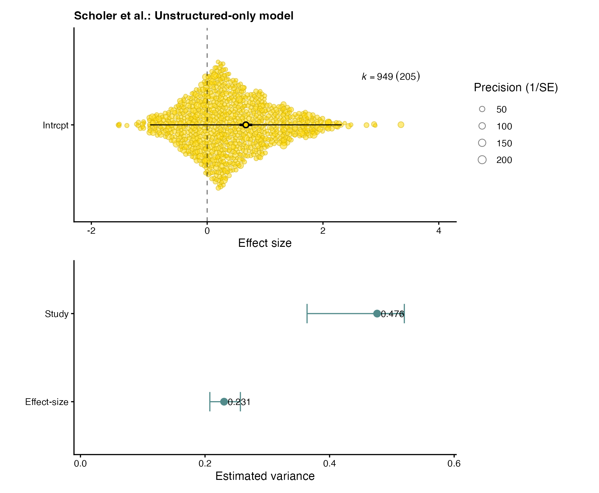
Spatial-only
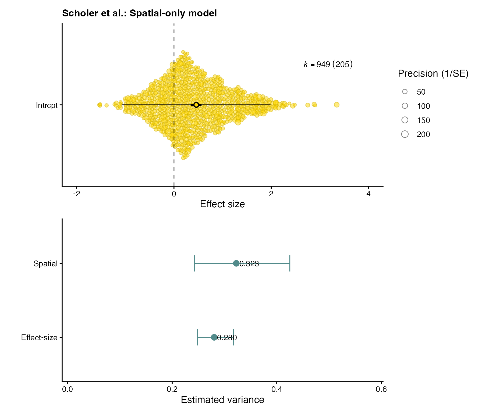
Combined
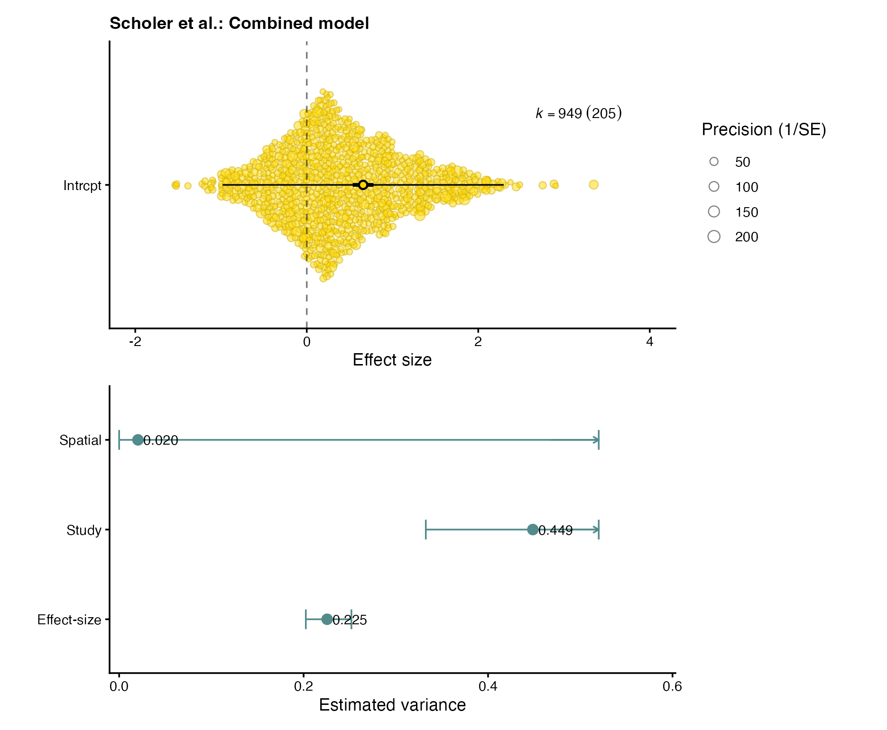
Profile diagnostics and generalized \(I^2\)
The profile grids below are identifiability diagnostics, not formal confidence intervals.
| Model and component | Diagnostic result | Interpretation |
|---|---|---|
| Spatial-only spatial variance | Fixing \(\tau^2=0\) loses 126.498 log-likelihood units | Spatial variance is separated from zero in the restricted model. |
| Spatial-only rho | The profile has a distinct maximum near 168.7 km | The restricted model estimates a finite spatial scale. |
| Combined spatial variance | Fixing \(\tau^2=0\) loses only 1.694 log-likelihood units | The additional spatial variance is weakly identified. |
| Combined rho | Tested values from 10 to 12,000 km are within 1.92 log-likelihood units of the profile maximum | The primary estimate of 535.6 km is not a precise correlation range. |
For the same generalized definition used above, \(\widetilde v=0.000725865\). The component \(I^2\) values are marginal variance allocations and need to be read with the fitted variance and profile diagnostics.
V_scholer <- diag(dat_scholer$vi)
X_scholer <- matrix(1, nrow = nrow(dat_scholer), ncol = 1)
v_tilde_scholer <- generalized_v_tilde(V_scholer, X_scholer)
stopifnot(isTRUE(all.equal(v_tilde_scholer, 0.000725865052242,
tolerance = 1e-12)))| Model | Effect-size \(I^2\) | Study \(I^2\) | Spatial \(I^2\) | Total \(I^2\) |
|---|---|---|---|---|
| Unstructured-only | 32.585% | 67.312% | – | 99.897% |
| Spatial-only | 46.435% | – | 53.445% | 99.880% |
| Combined | 32.433% | 64.526% | 2.937% | 99.896% |
The spatial-only model can absorb heterogeneity that is better represented as study-level variation. Once study-level heterogeneity is included, these data provide little support for a distinct additional spatial component. This does not show that spatial autocorrelation is absent; it shows that the additional spatial component is weakly identified under this covariance decomposition.
Reporting a spatial meta-analysis
For each spatial analysis, report the coordinate source and units, how site_id was constructed, the distance definition, the order checks for the distance matrix, the sampling-variance structure, and every random component. Compare a spatial-only model with an unstructured or combined alternative when study and location are distinct grouping structures. Finally, report whether profile diagnostics identify the spatial variance and rho; neither a large spatial-only variance nor a single fitted rho alone establishes broad-scale spatial autocorrelation.
Software and package versions
Click to view version info
sessionInfo()R version 4.6.0 (2026-04-24)
Platform: aarch64-apple-darwin23
Running under: macOS Tahoe 26.6.2
Matrix products: default
BLAS: /System/Library/Frameworks/Accelerate.framework/Versions/A/Frameworks/vecLib.framework/Versions/A/libBLAS.dylib
LAPACK: /Library/Frameworks/R.framework/Versions/4.6/Resources/lib/libRlapack.dylib; LAPACK version 3.12.1
locale:
[1] en_US.UTF-8/en_US.UTF-8/en_US.UTF-8/C/en_US.UTF-8/en_US.UTF-8
time zone: America/Edmonton
tzcode source: internal
attached base packages:
[1] stats graphics grDevices utils datasets methods base
other attached packages:
[1] phytools_2.5-2 maps_3.4.3 gtools_3.9.5
[4] sf_1.1-1 rotl_3.1.1 glmmTMB_1.1.15
[7] janitor_2.2.1 magrittr_2.0.5 orchaRd_2.2.1
[10] posterior_1.7.0 tidybayes_3.0.7 bayesplot_1.15.0
[13] MCMCglmm_2.36 coda_0.19-4.1 patchwork_1.3.2
[16] ape_5.8-1 here_1.0.2 crayon_1.5.3
[19] lubridate_1.9.5 forcats_1.0.1 stringr_1.6.0
[22] dplyr_1.2.1 purrr_1.2.2 readr_2.2.0
[25] tidyr_1.3.2 tibble_3.3.1 ggplot2_4.0.3
[28] tidyverse_2.0.0 metafor_5.0-1 numDeriv_2016.8-1.1
[31] metadat_1.6-0 Matrix_1.7-5 brms_2.23.0
[34] Rcpp_1.1.2
loaded via a namespace (and not attached):
[1] mathjaxr_2.0-0 RColorBrewer_1.1-3 tensorA_0.36.2.1
[4] rstudioapi_0.19.0 jsonlite_2.0.0 estimability_2.0.0
[7] farver_2.1.2 nloptr_2.2.1 rmarkdown_2.31
[10] vctrs_0.7.3 minqa_1.2.8 htmltools_0.5.9
[13] progress_1.2.3 distributional_0.8.1 curl_7.1.0
[16] DEoptim_2.2-8 KernSmooth_2.23-26 htmlwidgets_1.6.4
[19] sandwich_3.1-1 emmeans_2.0.3 zoo_1.8-15
[22] TMB_1.9.21 igraph_2.3.3 lifecycle_1.0.5
[25] iterators_1.0.14 pkgconfig_2.0.3 R6_2.6.1
[28] fastmap_1.2.0 rbibutils_2.4.1 snakecase_0.11.1
[31] digest_0.6.39 rprojroot_2.1.1 clusterGeneration_1.3.8
[34] timechange_0.4.0 httr_1.4.8 abind_1.4-8
[37] mgcv_1.9-4 compiler_4.6.0 proxy_0.4-29
[40] withr_3.0.3 doParallel_1.0.17 S7_0.2.2
[43] backports_1.5.1 optimParallel_1.0-2 DBI_1.3.0
[46] MASS_7.3-65 scatterplot3d_0.3-45 classInt_0.4-11
[49] corpcor_1.6.10 loo_2.10.0 tools_4.6.0
[52] units_1.0-1 rncl_0.8.10 otel_0.2.0
[55] rentrez_1.2.4 quadprog_1.5-8 glue_1.8.1
[58] nlme_3.1-169 cmdstanr_0.9.0 grid_4.6.0
[61] checkmate_2.3.4 generics_0.1.4 gtable_0.3.6
[64] tzdb_0.5.0 class_7.3-23 hms_1.1.4
[67] foreach_1.5.2 pillar_1.11.1 ggdist_3.3.3
[70] splines_4.6.0 lattice_0.22-9 tidyselect_1.2.1
[73] knitr_1.51 reformulas_0.4.4 arrayhelpers_1.1-2
[76] xfun_0.60 expm_1.0-0 bridgesampling_1.2-1
[79] matrixStats_1.5.0 stringi_1.8.9 yaml_2.3.12
[82] pacman_0.5.1 boot_1.3-32 evaluate_1.0.5
[85] codetools_0.2-20 cli_3.6.6 RcppParallel_5.1.11-2
[88] xtable_1.8-8 Rdpack_2.6.6 processx_3.9.0
[91] svUnit_1.0.8 XML_3.99-0.23 parallel_4.6.0
[94] rstantools_2.6.0 prettyunits_1.2.0 cubature_2.1.4-1
[97] Brobdingnag_1.2-9 phangorn_2.12.1 lme4_2.0-6
[100] mvtnorm_1.4-1 scales_1.4.0 e1071_1.7-17
[103] combinat_0.0-8 rlang_1.3.0 fastmatch_1.1-8
[106] mnormt_2.1.2 References
- Jetz, W., G. H. Thomas, J. B. Joy, K. Hartmann, and A. O. Mooers. (2012). The global diversity of birds in space and time. Nature. 491:444-448. https://doi.org/10.1038/nature11631
- Grafen A. (1989). The phylogenetic regression. Philosophical Transactions of the Royal Society of London. B, Biological Sciences. 326:119-157. https://doi.org/10.1098/rstb.1989.0106
- Grau-Andrés, R., Moreira, B., & Pausas, J. G. (2024). Global plant responses to intensified fire regimes. Global Ecology and Biogeography. 33:e13858. https://doi.org/10.1111/geb.13858
- Grenié M, Berti E, Carvajal‐Quintero J, Dädlow GM, Sagouis A, Winter M. (2022). Harmonizing taxon names in biodiversity data: A review of tools, databases and best practices. Methods in Ecology and Evolution. 14:12-25. https://doi.org/10.1111/2041-210X.13802
- Lim, J. N., Senior, A. M., & Nakagawa, S. (2014). Heterogeneity in individual quality and reproductive trade-offs within species. Evolution. 68:2306–2318. https://doi.org/10.1111/evo.12446
- Nakagawa, S., Lagisz, M., O’Dea, R. E., Pottier, P., Rutkowska, J., Senior, A. M., Yang, Y., & Noble, D. W. A. (2023). orchaRd 2.0: An R package for visualising meta-analyses with orchard plots. Methods in Ecology and Evolution. 14:2003–2010. https://doi.org/10.1111/2041-210X.14152
- Scholer, M. N., Strimas‐Mackey, M., & Jankowski, J. E. (2020). A meta‐analysis of global avian survival across species and latitude. Ecology Letters. 23:1537-1549. https://doi.org/10.1111/ele.13573
- Viechtbauer, W., White, T., Noble, D., Senior, A., & Hamilton, W. K. (2025). metadat: Meta-analysis datasets (Version 1.5-2) R package. https://github.com/wviechtb/metadat
- Rios Moura, R., Oliveira Gonzaga, M., Silva Pinto, N., Vasconcellos-Neto, J., & Requena, G. S. (2021). Assortative mating in space and time: Patterns and biases. Ecology Letters. 24:1089–1102. https://doi.org/10.1111/ele.13690